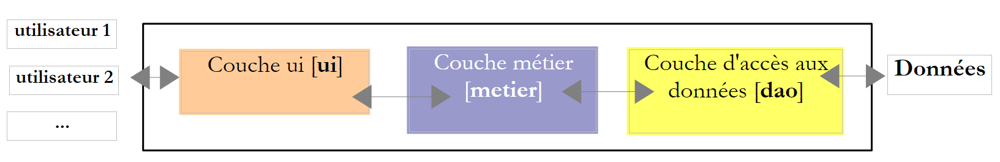

8. Les threads d'exécution
Ce chapitre présente l'exécution simultanée de plusieurs morceaux de code dans un même programme : les threads (fils d'exécution) et les outils qui permettent de les synchroniser. Il y a une vingtaine d'années, la plupart des machines n'avaient qu'un processeur et le parallélisme était surtout une illusion entretenue par le système d'exploitation. Aujourd'hui, le moindre ordinateur portable a plusieurs cœurs : plusieurs threads s'exécutent réellement en même temps, ce qui rend les problèmes de synchronisation étudiés ici encore plus présents.
Java a intégré les threads dès sa première version (1996) : la classe [Thread], le mot clé [synchronized] et les méthodes [wait] / [notify] de la classe [Object]. Java 5 (2004) a ajouté le paquetage [java.util.concurrent] et ses sous-paquetages [java.util.concurrent.locks] et [java.util.concurrent.atomic] : verrous, sémaphores, collections concurrentes, pools de threads… Java 7 y a ajouté le framework [Fork/Join], Java 8 les flux parallèles, et Java 21 les threads virtuels, qui ont profondément changé la façon d'écrire les serveurs. Java 25 apporte enfin les valeurs liées à une portée ([ScopedValue]). Nous verrons tous ces outils dans ce chapitre.
Les exemples sont des fichiers source compacts ([java Threads01.java]) placés dans le dossier [08-threads]. Rappelons qu'un fichier source compact importe automatiquement tout le module [java.base] : les classes des paquetages [java.util.concurrent], [java.util.concurrent.locks], [java.util.concurrent.atomic] et [java.time] sont donc utilisables sans directive [import].
Un avertissement avant de commencer : les résultats d'un programme multithread varient d'une exécution à l'autre. L'ordre dans lequel les threads obtiennent le processeur dépend du système d'exploitation, du nombre de processeurs et de la charge de la machine. Les résultats reproduits dans ce chapitre ont été obtenus sur une machine Linux à 2 processeurs, partagée avec d'autres programmes très actifs. Si vous exécutez les exemples, vous obtiendrez des résultats de même nature, mais rarement identiques. Nous indiquerons à chaque fois ce qui est reproductible et ce qui ne l'est pas.
8.1. La classe Thread
Lorsqu'on lance une application, elle s'exécute dans un flux d'exécution appelé un thread. La classe Java modélisant un thread est la classe [java.lang.Thread]. Ses principaux constructeurs et méthodes sont les suivants :
Membre | Rôle |
[Thread(Runnable tâche)], [Thread(Runnable tâche, String nom)] | crée un thread qui exécutera la méthode [run] de [tâche]. [Runnable] est l'interface fonctionnelle [void run()] : on lui passe le plus souvent une lambda ou une référence de méthode |
[static Thread.Builder.OfPlatform ofPlatform()], [static Thread.Builder.OfVirtual ofVirtual()] | (Java 21) rendent un constructeur (« builder ») de threads de plate-forme ou de threads virtuels, que l'on configure (nom, démon…) avant de créer le thread |
[static Thread currentThread()] | le thread qui exécute le code ayant appelé cette méthode |
[String getName()], [void setName(String nom)] | le nom du thread, utile pour le suivi |
[long threadId()] | (Java 19) un identifiant numérique unique du thread ; il remplace [getId()], dépréciée |
[boolean isDaemon()], [void setDaemon(boolean b)] | indique (fixe) si le thread est un thread démon (voir plus loin) |
[int getPriority()], [void setPriority(int p)] | la priorité du thread, de 1 ([MIN_PRIORITY]) à 10 ([MAX_PRIORITY]), 5 ([NORM_PRIORITY]) par défaut |
[Thread.State getState()], [boolean isAlive()] | l'état du thread ([NEW], [RUNNABLE], [BLOCKED], [WAITING], [TIMED_WAITING], [TERMINATED]) ; [isAlive] indique s'il a été lancé et n'est pas terminé |
[boolean isVirtual()] | (Java 21) indique si le thread est un thread virtuel |
[void start()] | lance l'exécution du thread |
[void join()], [boolean join(Duration délai)] | le thread T1 qui exécute [T2.join()] est bloqué jusqu'à ce que le thread T2 soit terminé. La seconde forme (Java 19) limite la durée de l'attente et indique si T2 est terminé |
[static void sleep(long ms)], [static void sleep(Duration d)] | le thread qui exécute la méthode est suspendu pendant [ms] millisecondes (pendant la durée [d]). Il perd le processeur, qui est donné à un autre thread |
[void interrupt()], [boolean isInterrupted()] | demande au thread de s'interrompre ; teste si une interruption a été demandée (voir plus loin) |
Les méthodes [join] et [sleep] lancent l'exception contrôlée [InterruptedException] si le thread est interrompu pendant son attente : le compilateur oblige à la traiter ou à la déclarer. Nous verrons sa signification au paragraphe consacré à l'interruption.
La classe [Thread] a aussi une méthode [stop] qui terminait un thread de force. Elle est dépréciée depuis Java 1.2 et, depuis Java 20, elle ne fait plus que lancer l'exception [UnsupportedOperationException] : arrêter brutalement un thread pouvait laisser les données qu'il manipulait dans un état incohérent. On demande aujourd'hui à un thread de s'arrêter de façon coopérative, en l'interrompant : nous le verrons un peu plus loin.
Voici une première application mettant en évidence l'existence d'un thread principal d'exécution, celui qui exécute la méthode [main]. Le programme [Threads01.java] est le suivant :
Résultats :
Commentaires :
- ligne 5 : on récupère une référence sur le thread qui exécute le programme ;
- lignes 7-10 : on affiche son nom, on le modifie, puis on l'affiche de nouveau. Au départ, le thread principal s'appelle [main] (ligne 2 des résultats) : c'est le lanceur Java qui lui a donné ce nom ;
- lignes 12-18 : quelques propriétés du thread. Dans cette exécution, le thread principal a l'identifiant 3 : la machine virtuelle crée quelques threads pour ses propres besoins avant d'exécuter [main], et cet identifiant peut varier d'une version de Java à l'autre. Ce n'est pas un thread démon ([isDaemon()] vaut [false]) ni un thread virtuel (nous verrons ces deux notions plus loin) ; sa priorité est la priorité normale 5 ; il est en cours d'exécution ([RUNNABLE]). La méthode [toString] du thread (ligne 17) affiche son identifiant, son nom, sa priorité et le nom de son groupe de threads ([main]) ;
- ligne 18 : la machine qui a exécuté l'exemple a 2 processeurs ;
- lignes 21-26 : une boucle qui fait un affichage toutes les secondes. [Thread.sleep(1000)] suspend le thread principal pendant une seconde. Comme [sleep] peut lancer l'exception contrôlée [InterruptedException], la méthode [main] la déclare dans sa clause [throws] (ligne 3). On notera le format [HH:mm:ss] (heures de 0 à 23) : le format [hh] afficherait les heures de 1 à 12.
8.2. Création de threads d'exécution
Il est possible d'avoir des applications où des morceaux de code s'exécutent de façon « simultanée » dans différents threads d'exécution. Si la machine a moins de processeurs que de threads prêts à s'exécuter, les threads se partagent les processeurs : ils en disposent, chacun leur tour, pendant un court instant (quelques millisecondes). Sur une machine à plusieurs processeurs, plusieurs threads s'exécutent réellement en même temps. La portion de temps accordée à un thread dépend de divers facteurs, dont sa priorité, qui a une valeur par défaut mais peut être fixée par programmation ([setPriority]) ; c'est une simple indication, que le système d'exploitation est libre d'ignorer (Linux l'ignore par défaut). Un thread qui dispose du processeur peut le libérer avant terme :
- en se mettant en attente d'un événement (fin d'un autre thread avec [join], attente d'un signal) ;
- en se mettant en sommeil pendant un temps déterminé ([sleep]).
Un thread T est d'abord créé, par exemple par le constructeur [new Thread(tâche, nom)], où [tâche] est un objet implémentant l'interface fonctionnelle [Runnable], dont l'unique méthode est [void run()]. Cet objet est le plus souvent une lambda ou une référence de méthode (les interfaces fonctionnelles ont été présentées au chapitre 7). On rencontre aussi, dans du code ancien, des classes dérivées de [Thread] qui redéfinissent sa méthode [run] : c'est déconseillé, car cela mélange le travail à faire et le moyen de l'exécuter.
La création d'un thread ne lance pas celui-ci :
- l'exécution du thread T est lancée par [T.start()] : la méthode [run] de la tâche passée au constructeur de T va alors être exécutée par le thread T. Le code qui exécute l'instruction [T.start()] n'attend pas la fin du thread T : il passe aussitôt à l'instruction suivante. On a alors deux threads qui s'exécutent en parallèle. Ils doivent souvent pouvoir communiquer entre eux pour savoir où en est le travail commun à réaliser : c'est le problème de la synchronisation des threads ;
- une fois lancé, le thread T s'exécute de façon autonome. Il s'arrête lorsque la méthode qu'il exécute est terminée ;
- on peut attendre la fin de son exécution par [T.join()]. C'est une instruction bloquante : le thread qui l'exécute est bloqué jusqu'à ce que le thread T ait terminé son travail. C'est un premier moyen de synchronisation.
Le programme [Threads02.java] est le suivant :
Commentaires :
- ligne 5 : on donne un nom au thread principal ;
- lignes 8-14 : on crée 5 threads et on les lance. Leurs références sont mémorisées dans un tableau afin de pouvoir les retrouver ultérieurement. Chaque thread exécute la méthode [affiche] des lignes 21-30 ;
- ligne 11 : la référence de méthode [this::affiche] est convertie automatiquement en un objet [Runnable] : la méthode [affiche] n'a pas de paramètre et ne rend pas de résultat, comme [run]. On écrit [this::affiche] parce que, dans un fichier source compact, les méthodes déclarées hors de toute classe sont des méthodes d'instance de la classe implicite, dont le nom n'est pas utilisable dans le code. Le second paramètre du constructeur est le nom du thread ;
- ligne 13 : le thread n° i est lancé. Cette opération n'est pas bloquante : le thread n° i s'exécute en parallèle du thread principal qui l'a lancé ;
- ligne 17 : le thread principal arrive à la fin du programme ;
- lignes 21-30 : la méthode [affiche] affiche le nom et l'identifiant du thread qui l'exécute ainsi que les heures (à la milliseconde près) de début et de fin d'exécution ;
- ligne 27 : tout thread exécutant la méthode [affiche] s'arrête pendant 1 seconde. Le processeur est alors donné à un autre thread en attente de processeur. À la fin de la seconde d'arrêt, le thread arrêté redevient candidat au processeur. Il l'obtiendra lorsque son tour sera venu ;
- lignes 33-40 : la méthode [dormir] enveloppe [Thread.sleep]. La méthode [run] de [Runnable] ne déclare aucune exception contrôlée : la méthode [affiche] ne peut donc pas laisser échapper l'exception [InterruptedException] que lance [sleep]. La méthode [dormir] l'intercepte et rétablit l'indicateur d'interruption du thread (ligne 38) ; nous expliquerons ce geste au paragraphe sur l'interruption. Nous retrouverons cette petite méthode dans la plupart des programmes du chapitre ;
- lignes 43-45 : la méthode [heure] rend l'heure courante au format [HH:mm:ss.SSS] ([SSS] : les millisecondes).
Résultats :
Ces résultats sont très instructifs :
- on voit tout d'abord que le lancement d'un thread n'est pas bloquant. Le thread principal a lancé 5 threads et a atteint la fin du programme (ligne 6) alors que le thread 3 n'avait pas encore affiché son premier message ;
- l'ordre d'exécution des threads est imprévisible : dans cette exécution, le thread 4 a affiché son message de début avant le thread 0. Le système d'exploitation a ici 6 threads et 2 processeurs ; il distribue les processeurs à ces threads selon des règles qui lui sont propres ;
- on remarque aussi que l'ordre des affichages ne suit pas toujours l'ordre des heures affichées : le thread principal a affiché sa fin à 13.725, après des messages datés de 13.727 à 13.732. L'heure est calculée avant l'affichage, et entre les deux, un autre thread a pu écrire sur la console. [IO.println] (comme [System.out.println]) est sûre vis-à-vis des threads : deux lignes écrites par deux threads ne se mélangent pas, mais leur ordre n'est pas garanti ;
- les identifiants des threads créés (22 à 26) montrent que la machine virtuelle avait déjà créé une vingtaine de threads pour ses propres besoins (ramasse-miettes, compilateur à la volée…) ;
- chaque thread s'arrête une seconde avec [sleep], puis termine l'exécution de la méthode [affiche] ;
- enfin, le programme ne s'est pas arrêté quand le thread principal a terminé son travail : la machine virtuelle a attendu la fin des 5 threads. C'est le cas parce que ces threads ne sont pas des threads démons : la machine virtuelle Java s'arrête lorsque tous ses threads non démons sont terminés.
Un thread peut au contraire être déclaré démon (« daemon thread »), par [setDaemon(true)] avant de le lancer. Les threads démons sont des threads de service, qui n'empêchent pas la machine virtuelle de s'arrêter : lorsque le dernier thread non démon se termine, ils sont arrêtés. Le programme [Threads03.java] est le suivant :
Commentaires :
- ligne 8 : depuis Java 21, la méthode [Thread.ofPlatform()] rend un constructeur de threads de type [Thread.Builder], que l'on configure par des appels chaînés : [daemon()] demande des threads démons, [name("", 0)] demande que les threads soient nommés par un préfixe (ici la chaîne vide) suivi d'un numéro qui commence à 0 et augmente d'une unité à chaque thread créé. Les threads de plate-forme sont les threads « classiques », que nous utilisons depuis le début du chapitre, par opposition aux threads virtuels présentés plus loin ;
- ligne 12 : la méthode [start(Runnable)] du constructeur crée un thread et le lance aussitôt. Sa méthode [unstarted(Runnable)] crée un thread sans le lancer ;
- ligne 16 : le thread principal attend 100 ms pour laisser aux threads le temps de démarrer, puis il se termine.
Résultats :
Trois des 5 threads ont commencé leur exécution, puis le thread principal s'est terminé (ligne 4). Le thread 3 avait calculé l'heure de son message avant la fin du thread principal, mais n'a pu l'afficher qu'après (ligne 5), pendant que la machine virtuelle s'arrêtait. Les threads démons ont alors été arrêtés pendant leur seconde de sommeil : aucun message de fin n'est affiché. Deux threads n'ont même pas eu le temps d'afficher leur message de début : la machine étant très chargée, 100 ms ne leur ont pas suffi pour obtenir le processeur (une autre exécution donnera un autre nombre de messages de début, mais jamais de message de fin). On obtient le même effet en terminant [main] par [System.exit(0)], qui arrête la machine virtuelle, donc tous les threads de l'application, démons ou pas. Les threads virtuels, que nous verrons plus loin, sont toujours des threads démons.
Si le thread principal veut attendre la fin des threads qu'il a créés, il utilise la méthode [join]. Le programme [Threads04.java] montre également une autre façon d'indiquer le code que doit exécuter un thread : une lambda.
Commentaires :
- ligne 13 : le thread exécute la lambda [() -> affiche(numero, 1000 + 100 * numero)]. Une lambda sans paramètre et sans résultat est compatible avec l'interface [Runnable]. Cette écriture permet d'appeler une méthode ayant des paramètres typés (ici un [int] et un [long]), alors que [run] n'en a aucun ;
- ligne 11 : la lambda utilise une copie de la variable de boucle [i]. C'est obligatoire : une lambda ne peut utiliser que des variables locales effectivement finales, c'est-à-dire jamais modifiées après leur initialisation. La variable [i] est modifiée par la boucle ([i++]) : si la lambda l'utilisait, le compilateur refuserait le programme (« local variables referenced from a lambda expression must be final or effectively final »). La variable [numero], déclarée dans le corps de la boucle, est au contraire une nouvelle variable à chaque itération, jamais modifiée. Cette règle protège d'un piège classique : sans elle, un thread qui démarre tardivement pourrait lire la valeur de [i] d'une itération suivante, voire la valeur finale 5 ;
- lignes 18-21 : le thread principal attend chacun des threads. Il est d'abord bloqué en attente du thread 0, puis du thread 1, etc. Lorsqu'il sort de la boucle, les 5 threads qu'il a lancés sont terminés. Comme [join] peut lancer [InterruptedException], [main] déclare cette exception (ligne 3) ;
- ligne 31 : la tâche n° i dort 1 000 + 100 × i millisecondes, afin que les threads se terminent dans un ordre connu.
Résultats :
Les messages de début apparaissent dans un ordre quelconque, mais les messages de fin dans l'ordre des numéros, puisque les durées de sommeil sont croissantes : cette partie du résultat est reproductible. La dernière ligne montre que le thread principal s'est terminé après les threads qu'il avait lancés, au moment où le dernier d'entre eux s'est terminé.
8.3. Arrêter un thread : l'interruption
Comment arrêter un thread avant la fin de son travail, par exemple lorsque l'utilisateur annule une opération longue ? Java ne permet pas de tuer un thread ; il propose un mécanisme coopératif, l'interruption :
- chaque thread possède un indicateur d'interruption, un booléen initialement à [false] ;
- un thread T1 qui veut arrêter le thread T2 appelle [T2.interrupt()]. Cela positionne l'indicateur d'interruption de T2. C'est une demande d'arrêt : T2 n'est pas arrêté, c'est à lui de décider quand et comment s'arrêter, de façon à laisser ses données dans un état cohérent ;
- si T2 est bloqué dans une méthode d'attente ([sleep], [join], [wait], et la plupart des méthodes bloquantes de [java.util.concurrent]), il est réveillé : la méthode lance l'exception [InterruptedException] et l'indicateur d'interruption est remis à [false] ;
- si T2 calcule, sans jamais attendre, il doit consulter lui-même son indicateur avec [Thread.currentThread().isInterrupted()], à intervalles réguliers.
C'est pourquoi les méthodes bloquantes déclarent l'exception contrôlée [InterruptedException] : le compilateur oblige le programmeur à décider de ce qu'il fera d'une demande d'arrêt. Deux réponses sont correctes : laisser l'exception remonter à l'appelant (en la déclarant dans la clause [throws]), ou l'intercepter et terminer proprement le travail. Lorsqu'on ne peut faire ni l'un ni l'autre, comme dans la méthode [dormir] du programme précédent, on rétablit l'indicateur par [Thread.currentThread().interrupt()], pour que le code appelant puisse encore voir la demande. La seule réponse incorrecte est d'ignorer l'exception. Le programme [Threads05.java] montre les trois cas :
Commentaires :
- lignes 5-18 : le thread [dormeur] passe l'essentiel de son temps dans [Thread.sleep]. La boucle [while (true)] n'a pas de condition d'arrêt : c'est l'exception [InterruptedException], lancée par [sleep] lorsque le thread est interrompu, qui fait sortir de la boucle (ligne 14). La lambda est une instruction [try] qui englobe tout le travail du thread : à la réception de l'exception, le thread affiche un message puis se termine ;
- lignes 20-27 : le thread [calculateur] ne fait jamais d'attente. Il consulte son indicateur d'interruption à chaque tour de boucle (ligne 23) ;
- lignes 29-38 : le thread [sourd] intercepte [InterruptedException] et continue comme si de rien n'était. La demande d'arrêt est perdue : c'est l'erreur à ne pas commettre. C'est un thread démon, pour que le programme puisse se terminer sans l'attendre ;
- ligne 41 : le thread principal laisse travailler les threads pendant une seconde ;
- lignes 43-45 : il demande l'arrêt des trois threads ;
- lignes 47-50 : il attend la fin de chaque thread pendant au plus une seconde. La méthode [join(Duration)] (Java 19) rend [true] si le thread s'est terminé pendant ce délai, [false] sinon. [Duration.ofSeconds(1)] représente une durée d'une seconde (classe [java.time.Duration]).
Résultats :
Les threads [dormeur] et [calculateur] se sont arrêtés quelques millisecondes après la demande ; le thread [sourd] l'a ignorée et ne s'était toujours pas terminé une seconde plus tard ([false], dernière ligne). Le nombre d'itérations du calculateur varie beaucoup d'une exécution à l'autre, selon la part de processeur qu'il a obtenue ; le reste du résultat est reproductible.
L'interruption est le mécanisme d'arrêt de toute la bibliothèque Java : nous verrons plus loin que la méthode [cancel] d'une tâche ([Future]) et la fermeture brutale d'un pool de threads ([shutdownNow]) interrompent les threads concernés. Le chapitre suivant présentera d'autres façons d'annuler un traitement asynchrone, comme les délais d'expiration.
8.4. Les threads virtuels
Les threads que nous avons créés jusqu'ici sont des threads de plate-forme : chacun d'eux est une enveloppe autour d'un thread du système d'exploitation, qu'il occupe pendant toute sa vie. Un thread du système est une ressource coûteuse : sa création prend du temps, sa pile réserve de la mémoire (de l'ordre du mégaoctet), et le système ne sait pas en gérer efficacement plus de quelques milliers. Or un serveur qui consacre un thread à chaque client (voir le schéma du paragraphe suivant) passe l'essentiel de son temps à attendre : la réponse d'une base de données, la requête suivante du client… Pendant ces attentes, le thread du système est bloqué et inutilisable.
Java 21 a introduit les threads virtuels (« virtual threads », JEP 444). Un thread virtuel est un objet [Thread] comme un autre, mais il est géré par la machine virtuelle Java et non par le système d'exploitation :
- pour s'exécuter, un thread virtuel est monté sur un thread de plate-forme, appelé son thread porteur (« carrier thread »). Les threads porteurs forment un petit pool, dont la taille est par défaut le nombre de processeurs ;
- lorsqu'un thread virtuel se bloque ([sleep], attente d'une entrée / sortie réseau, d'un verrou, d'une file bloquante…), il est démonté : sa pile est mise de côté dans la mémoire de la machine virtuelle, et le thread porteur est aussitôt disponible pour un autre thread virtuel. Lorsque l'attente se termine, le thread virtuel est remonté sur un thread porteur, pas forcément le même ;
- un thread virtuel coûte quelques centaines d'octets : on peut en créer des millions.
Le programme [Threads06.java] compare le lancement de 10 000 threads de plate-forme et de 10 000 threads virtuels qui dorment chacun une seconde :
Commentaires :
- lignes 6-7 : la méthode [mesurer] est appelée deux fois, avec un constructeur de threads de plate-forme ([Thread.ofPlatform()]) puis avec un constructeur de threads virtuels ([Thread.ofVirtual()]). Les deux constructeurs ont le type commun [Thread.Builder] : le reste du code est identique ;
- lignes 20-31 : la méthode [mesurer] lance [nbThreads] threads qui dorment une seconde, attend leur fin et affiche la durée totale. La méthode [System.nanoTime()] rend un temps en nanosecondes, qui ne sert qu'à mesurer des durées ;
- lignes 10-14 : un thread virtuel nommé [virtuel] affiche sa représentation textuelle avant et après un sommeil ;
- ligne 16 : un thread virtuel est toujours un thread démon.
Résultats :
- 10 000 threads de plate-forme ont mis plusieurs secondes à faire ce qui aurait dû prendre une seconde : la création des threads du système et la gestion de leurs piles ont coûté cher. Avec 100 000 threads, le programme échouerait probablement, faute de mémoire ou de threads disponibles dans le système ;
- 10 000 threads virtuels ont fait le même travail en à peine plus d'une seconde : pendant leur sommeil, ils n'occupaient aucun thread du système. Les durées exactes varient d'une exécution à l'autre, mais l'écart entre les deux sortes de threads est reproductible ;
- la représentation textuelle d'un thread virtuel ([VirtualThread[#…,virtuel]]) indique, après le caractère [@], le thread porteur sur lequel il est monté : un thread du pool [ForkJoinPool-1], que nous retrouverons plus loin. Après son sommeil, le thread virtuel peut reprendre son exécution sur un autre porteur.
Les threads virtuels ne rendent pas les calculs plus rapides : un calcul qui occupe le processeur sans jamais attendre ne va pas plus vite dans un thread virtuel que dans un thread de plate-forme, et le nombre de calculs simultanés reste limité par le nombre de processeurs. Leur intérêt est de pouvoir consacrer, sans compter, un thread à chaque travail qui passe l'essentiel de son temps à attendre : c'est le cas des serveurs, du paragraphe suivant et des chapitres 12 et 13. Tout ce que nous allons voir sur la synchronisation des threads s'applique aussi bien aux threads virtuels qu'aux threads de plate-forme.
8.5. Intérêt des threads
Maintenant que nous avons mis en évidence l'existence d'un thread par défaut, celui qui exécute la méthode [main], et que nous savons comment en créer d'autres, arrêtons-nous sur l'intérêt des threads. Ils ont deux usages principaux :
- utiliser tous les processeurs de la machine pour un calcul long : on découpe le travail en morceaux confiés à des threads différents. Nous le ferons avec les flux parallèles et le framework [Fork/Join] à la fin de ce chapitre ;
- faire plusieurs choses à la fois, en particulier lorsque certaines d'entre elles consistent surtout à attendre (une réponse du réseau, une lecture sur disque, une saisie de l'utilisateur). C'est le cas des applications client / serveur de l'internet que nous présenterons au chapitre 12.
Dans une application client / serveur de l'internet, un serveur situé sur une machine S1 répond aux demandes de clients situés sur des machines distantes C1, C2, …, Cn :

Nous utilisons tous les jours des applications de l'internet correspondant à ce schéma : services web, messagerie électronique, transfert de fichiers… Dans le schéma ci-dessus, le serveur S1 doit servir les clients Ci de façon simultanée. Si nous prenons l'exemple d'un serveur de fichiers, nous savons qu'un transfert peut parfois prendre plusieurs minutes. Il est hors de question qu'un client monopolise tout seul le serveur pendant une telle durée. Une solution classique est que le serveur crée autant de threads d'exécution qu'il y a de clients. Chaque thread est alors chargé de s'occuper d'un client particulier :

Avec des threads de plate-forme, le serveur utilise en pratique un pool de threads, présenté plus loin, dont le nombre limité de threads borne le nombre de clients servis simultanément. Avec les threads virtuels, le schéma ci-dessus redevient la bonne solution : un thread virtuel par client, même s'il y a des dizaines de milliers de clients, puisqu'un client qui attend n'occupe aucun thread du système. C'est ce que permettent aujourd'hui les serveurs web Java, comme Tomcat, que nous utiliserons au chapitre 13.
8.6. Échange d'informations entre threads
Dans les exemples précédents, les threads exécutaient une méthode sans paramètre, ou une lambda qui appelait une méthode avec des paramètres. La méthode [run] de [Runnable] n'ayant ni paramètre ni résultat, c'est la lambda qui transmet de l'information au thread lancé : elle capture les variables dont elle a besoin. Si la variable capturée désigne un objet, le thread lancé peut aussi y déposer des résultats que le thread lanceur lira. Le programme [Threads07.java] est le suivant :
Commentaires :
- lignes 48-75 : l'information échangée avec chaque thread est un objet [Donnees]. Il y a là un échange d'informations dans les deux sens entre le thread lanceur et le thread lancé. [debut] et [duree] sont des champs [final] : ils sont fixés une fois pour toutes par le constructeur :
- [debut] : heure de début d'exécution du thread, fixée par le thread lanceur ;
- [duree] : durée en secondes du sommeil du thread lancé, fixée par le thread lanceur ;
- [fin] : heure de fin d'exécution du thread, fixée par le thread lancé ;
- ligne 12 : un objet [Donnees] est créé et mémorisé dans le tableau [donnees] (ligne 13) ;
- ligne 15 : la lambda [() -> dormir(d)] capture la variable [d], effectivement finale : le thread lancé exécutera la méthode [dormir] des lignes 36-45 avec l'objet [d] comme paramètre ;
- lignes 21-30 : le thread principal attend la fin de chacun des threads qu'il a lancés, puis récupère l'objet [donnees[i]] du thread n° i et en affiche le contenu. La durée effective est calculée par [Duration.between(début, fin)] ;
- ligne 39 : le champ [duree] du paramètre fixe la durée du sommeil ;
- ligne 44 : le champ [fin] du paramètre est renseigné.
Résultats :
Cet exemple montre que deux threads peuvent échanger de l'information :
- le thread lanceur peut contrôler l'exécution du thread lancé en lui donnant des informations ;
- le thread lancé peut rendre des résultats au thread lanceur.
Pour que le thread lanceur sache à quel moment les résultats qu'il attend sont disponibles, il faut qu'il soit averti de la fin du thread lancé. Ici, il a attendu sa fin avec la méthode [join]. Ce n'est pas qu'une question de moment : nous verrons au paragraphe consacré au mot clé [volatile] qu'une écriture faite par un thread n'est pas forcément visible par un autre. Le modèle mémoire de Java garantit que tout ce qu'a écrit un thread est visible par le thread qui a attendu sa fin avec [join], et que tout ce qu'a écrit le thread lanceur avant [start] est visible par le thread lancé. Nous verrons d'autres façons de se synchroniser dans la suite.
Au lieu d'une lambda, on pourrait écrire une classe qui implémente [Runnable] et dont les champs contiennent les informations échangées. La lambda est plus concise ; c'est l'écriture la plus courante aujourd'hui. Pour récupérer le résultat d'un traitement, nous verrons aussi plus loin l'interface [Callable<V>], dont la méthode [V call()] rend un résultat.
8.7. Accès concurrents à des ressources partagées
8.7.1. Accès concurrents non synchronisés
Dans le paragraphe précédent, l'information n'était échangée que par deux threads et à des moments bien précis : on avait là un classique passage de paramètres. Il existe d'autres cas où une information est partagée par plusieurs threads qui peuvent vouloir la lire ou la mettre à jour au même moment. Se pose alors le problème de l'intégrité de cette information. Supposons que l'information partagée soit une structure S avec diverses informations I1, I2, …, In :
- un thread T1 commence à mettre à jour la structure S : il modifie le champ I1 et est interrompu avant d'avoir terminé la mise à jour complète de la structure S ;
- un thread T2 qui récupère le processeur lit alors la structure S pour prendre des décisions. Il lit une structure dans un état instable : certains champs sont à jour, d'autres pas.
On appelle cette situation l'accès concurrent à une ressource partagée, ici la structure S. Elle est souvent délicate à gérer. Prenons l'exemple suivant pour illustrer les problèmes qui peuvent surgir :
- une application va générer n threads, n étant passé en paramètre ;
- la ressource partagée est un compteur qui doit être incrémenté par chaque thread généré ;
- à la fin de l'application, la valeur du compteur est affichée. On devrait donc trouver n.
Le programme [Threads08.java] est le suivant :
Commentaires :
- lignes 5-11 : le nombre de threads est passé en argument. La méthode [entier] (lignes 28-34) rend l'entier contenu dans une chaîne, ou -1 si la chaîne n'en contient pas ; la condition de la ligne 7 rejette donc aussi bien un argument absent ou invalide qu'un nombre hors de l'intervalle [1, 100]. En cas d'erreur, le programme écrit un message sur la sortie d'erreur ([System.err]) et se termine avec le code de sortie 1 ([System.exit(1)]) ;
- ligne 16 : chaque thread exécute la méthode statique [incrementer] de la classe [Compteur]. La référence de méthode [Compteur::incrementer] est ici possible parce que [Compteur] est une classe nommée ;
- lignes 37-58 : la ressource partagée est le champ statique [valeur] de la classe [Compteur]. Le compteur est encapsulé dans une classe imbriquée statique, avec la méthode [incrementer] exécutée par chaque thread ;
- ligne 49 : le compteur est lu ;
- ligne 52 : le thread s'arrête 1 s. Il perd donc le processeur ;
- ligne 54 : le compteur est incrémenté.
L'arrêt d'une seconde n'est là que pour forcer le thread à perdre le processeur entre la lecture et l'écriture du compteur. Dans la pratique, rien n'assure qu'un thread ne sera pas interrompu entre ces deux moments, et sur une machine multiprocesseur, deux threads peuvent même lire le compteur exactement au même moment. Le sommeil d'une seconde ne fait que systématiser ce risque.
Les arguments du programme se placent après le nom du fichier source. Sans argument, on obtient le message d'erreur (la commande [echo $?] du shell Linux affiche le code de sortie du dernier programme exécuté) :
Avec 5 threads :
À la lecture de ces résultats, on voit bien ce qui se passe :
- un premier thread lit le compteur. Il trouve 0. Il s'arrête 1 s et perd donc le processeur ;
- un second thread lit lui aussi la valeur du compteur. Elle est toujours à 0 puisque le thread précédent ne l'a pas encore incrémentée. Il s'arrête lui aussi 1 s ;
- en moins d'une seconde, les 5 threads ont le temps de lire tous la valeur 0 ;
- lorsqu'ils se réveillent, ils incrémentent la valeur 0 qu'ils ont lue et écrivent tous la valeur 1 dans le compteur, ce que confirme la dernière ligne (ligne 12). Ce résultat faux est reproductible : seul l'ordre des threads change d'une exécution à l'autre.
On peut objecter que l'exemple est artificiel. Supprimons donc le sommeil et utilisons l'opérateur [++] qui donne l'illusion d'une instruction unique. Le programme [Threads09.java] est le suivant :
Commentaires :
- lignes 5-6 : le nombre de threads (4 par défaut) et le nombre d'incrémentations faites par chaque thread (50 millions par défaut) peuvent être passés en arguments. Le séparateur [_] rend lisible la constante [50_000_000] ;
- ligne 14 : les threads sont créés et lancés par [Thread.ofPlatform().start(…)] ; ils n'ont pas besoin de nom ;
- ligne 17 : chaque thread incrémente le compteur partagé, sans aucune pause ;
- ligne 27 : dans la chaîne de format, [%,d] affiche un nombre entier avec le séparateur des milliers de la langue courante (ici le français : une espace fine insécable). La méthode d'instance [formatted(…)] (Java 15) d'une chaîne équivaut à [String.format(chaîne, …)].
Résultats :
Des dizaines de millions de mises à jour ont été perdues, et leur nombre varie d'un essai à l'autre. L'opération de haut niveau [Compteur.valeur++] est en effet traduite en plusieurs instructions élémentaires du processeur : lire la valeur en mémoire, l'incrémenter dans un registre, écrire le résultat en mémoire. Si deux threads lisent la même valeur avant que l'un d'eux n'ait écrit la sienne, une incrémentation est perdue, exactement comme dans l'exemple précédent.
L'essai 3 mérite une explication : il a perdu presque exactement 150 millions de mises à jour, soit le travail de trois threads sur quatre. Après quelques secondes d'exécution, le compilateur à la volée (JIT) de la machine virtuelle a optimisé la boucle des lignes 15-18 : il a jugé qu'aucun autre thread n'était censé voir le compteur pendant la boucle (rien dans le code ne le demande) et a placé le compteur dans un registre du processeur. Chaque thread lit alors le compteur une seule fois, lui ajoute 50 millions dans son registre et l'écrit une seule fois à la fin. Si les quatre threads lisent la valeur 0 avant que l'un d'eux n'ait écrit, trois résultats sur quatre sont perdus ; si au contraire leurs travaux ne se chevauchent pas, le résultat est juste. Dans d'autres exécutions de ce programme, les essais 2 et 3 ont d'ailleurs donné la valeur exacte de 200 000 000. Seul le premier essai, exécuté avant cette optimisation, perd des mises à jour de façon reproductible. C'est ce qui rend ces erreurs redoutables : un programme peut fonctionner pendant des mois et se tromper le jour où la machine est plus chargée, ou plus rapide.
D'où vient le problème ? Un thread a lu une valeur périmée parce qu'un autre avait été interrompu, ou travaillait en même temps sur un autre processeur, avant d'avoir terminé son travail qui était de mettre à jour le compteur. Cela nous amène aux notions de ressource critique et de section critique d'un programme :
- une ressource critique est une ressource qui ne peut être détenue que par un thread à la fois. Ici, la ressource critique est le compteur ;
- une section critique d'un programme est une séquence d'instructions du flux d'exécution d'un thread au cours de laquelle il accède à une ressource critique. On doit assurer qu'au cours de cette section critique, il est le seul à avoir accès à la ressource.
Dans le programme [Threads08.java], la section critique est le code situé entre la lecture du compteur et l'écriture de sa nouvelle valeur :
Pour exécuter ce code, un thread doit être assuré d'être seul. Il peut être interrompu, mais pendant cette interruption, un autre thread ne doit pas pouvoir exécuter ce même code. Java offre divers outils pour assurer l'entrée unitaire dans les sections critiques de code. Nous en voyons quelques-uns maintenant.
8.7.2. Le mot clé synchronized
Le bloc [synchronized] délimite une section critique de la façon suivante : [synchronized (verrou) { …section critique… }]. [verrou] est un objet visible par tous les threads exécutant la section critique. En Java, tout objet possède un verrou interne, appelé aussi moniteur. Le bloc [synchronized] assure qu'un seul thread à la fois détient le moniteur de l'objet [verrou], donc qu'un seul thread à la fois exécute la section critique : un thread qui arrive devant un moniteur détenu par un autre thread est bloqué jusqu'à ce que le moniteur soit libéré. Le moniteur est libéré à la sortie du bloc, que celle-ci soit normale ou due à une exception.
L'exemple précédent est réécrit comme suit dans [Threads10.java] :
Commentaires :
- ligne 45 : [verrou] est l'objet qui va permettre la synchronisation de tous les threads. Il ne sert qu'à cela : c'est un simple [Object]. Il est [final] : la référence ne doit jamais changer, sinon deux threads pourraient verrouiller deux objets différents ;
- lignes 59-69 : la section critique de la méthode [incrementer] est encadrée par le bloc [synchronized]. Le thread garde le verrou pendant son sommeil d'une seconde : les autres threads ne peuvent pas entrer ;
- lignes 47-51 : la lecture du compteur par le thread principal est elle aussi protégée par le verrou. Ici, ce n'est pas indispensable, puisque le thread principal a attendu la fin des threads avec [join] ; mais c'est la bonne habitude : une donnée protégée par un verrou doit être lue et écrite sous la protection de ce verrou ;
- lignes 20-26 : le thread principal attend les threads dans l'ordre inverse de leur création.
Résultats avec 3 threads :
- les trois threads demandent à entrer dans la section critique, presque au même instant ;
- un seul y entre, ici le thread 2 (l'ordre d'entrée n'est pas garanti : ce n'est pas forcément le premier arrivé qui entre le premier). Il lit le compteur, dort une seconde, écrit la nouvelle valeur et quitte la section critique ;
- les deux autres threads sont bloqués tant que le premier n'est pas sorti de la section critique, puis passent l'un après l'autre. Chacun lit la valeur écrite par le précédent. On remarque (lignes 8-9) que le thread 1 a lu le compteur avant que le thread 2 n'affiche qu'il avait quitté la section critique : le thread 2 a bien libéré le verrou, mais il n'affiche son message qu'après le bloc [synchronized], et le thread 1 a été plus rapide ;
- le thread principal attendait la fin du thread 2. Quand il en est prévenu, il attend la fin du thread 1, puis celle du thread 0 ;
- le nombre de threads est correct (ligne 20). Quel que soit l'ordre de passage des threads, ce résultat est reproductible.
Le mot clé [synchronized] peut aussi qualifier une méthode entière : [synchronized void m() {…}] équivaut à un bloc [synchronized (this) {…}] englobant tout le corps de la méthode, et [static synchronized void m() {…}] à un bloc [synchronized (Compteur.class) {…}], qui verrouille l'objet [Class] de la classe. C'est l'écriture la plus courte, et on la rencontre souvent. Elle a toutefois un inconvénient : l'objet verrouillé ([this], ou l'objet [Class]) est visible de l'extérieur, et du code étranger peut prendre le même verrou et bloquer le nôtre. On préfère donc souvent verrouiller un objet privé, comme dans l'exemple. Pour la même raison, on ne verrouille jamais une chaîne de caractères (les chaînes littérales identiques sont un seul et même objet partagé par tout le programme) ni, depuis Java 16, un objet d'une classe « fondée sur la valeur » comme [Integer] ou [LocalDate] (le compilateur le signale par un avertissement).
Un thread qui détient déjà un moniteur peut entrer de nouveau dans un bloc [synchronized] sur le même objet sans se bloquer lui-même : on dit que le verrou est réentrant. Une méthode [synchronized] peut ainsi appeler une autre méthode [synchronized] du même objet.
8.7.3. La classe ReentrantLock
Le bloc [synchronized] est simple, mais rigide : un thread qui attend un moniteur attend indéfiniment, sans pouvoir renoncer au bout d'un certain temps, et sans pouvoir être interrompu. La classe [java.util.concurrent.locks.ReentrantLock] (Java 5) est un verrou explicite, réentrant lui aussi, qui offre ces possibilités. Elle implémente l'interface [Lock]. Nous utiliserons les constructeurs et méthodes suivants :
Membre | Rôle |
[ReentrantLock()], [ReentrantLock(boolean équitable)] | crée un verrou. Un verrou équitable ([true]) est donné aux threads dans l'ordre où ils l'ont demandé ; un verrou non équitable (par défaut) est plus rapide, mais un thread peut passer devant les autres |
[void lock()] | le thread T1 qui exécute [V.lock()] demande le verrou V. Si V n'est détenu par aucun thread, il est donné à T1. Si un thread T2 fait ensuite la même opération, il est bloqué : un verrou ne peut appartenir qu'à un thread. T2 sera débloqué lorsque T1 libérera V. Plusieurs threads peuvent ainsi être bloqués en attente de V |
[boolean tryLock()], [boolean tryLock(long délai, TimeUnit unité)] | demande le verrou sans attendre, ou en attendant au plus [délai]. La méthode rend [false] si le verrou n'a pas pu être obtenu |
[void lockInterruptibly()] | comme [lock], mais l'attente peut être interrompue ([InterruptedException]) |
[void unlock()] | le thread qui détient V le libère. L'un des threads en attente de V l'obtient alors |
[boolean isHeldByCurrentThread()] | indique si le thread courant détient le verrou |
[Condition newCondition()] | crée une condition associée au verrou (voir plus loin) |
La synchronisation d'une section critique se fait toujours selon le même schéma : [V.lock(); try { …section critique… } finally { V.unlock(); }]. Il ne faut pas oublier de libérer le verrou, sinon les threads qui l'attendent restent bloqués indéfiniment : c'est pourquoi la libération est faite dans une clause [finally], exécutée qu'il y ait eu exception ou non. Le bloc [synchronized] fait cela automatiquement ; avec un [ReentrantLock], c'est au programmeur de le faire. Le programme [Threads11.java] reprend l'exemple précédent avec un [ReentrantLock] :
Le programme principal est celui de [Threads08.java]. Commentaires :
- ligne 41 : l'objet de synchronisation des threads est désormais un verrou [ReentrantLock], équitable ;
- ligne 58 : début de la section critique. Le thread est bloqué jusqu'à ce que le verrou soit libre ;
- lignes 59-73 : parce qu'un verrou doit toujours être libéré, exception ou pas, la section critique est placée dans un [try] dont la clause [finally] libère le verrou (ligne 72) ;
- lignes 43-50 : le même schéma protège la lecture du compteur. L'instruction [return valeur;] est exécutée avant la clause [finally] : la valeur rendue est lue pendant que le verrou est détenu.
Résultats :
Les résultats sont analogues aux précédents : les threads passent un par un dans la section critique et le compteur final est juste. Le verrou étant équitable, les threads l'ont obtenu dans l'ordre où ils l'ont demandé : l'ordre de leurs appels à [lock], que les heures des messages « attend l'autorisation », calculées un peu avant, ne reflètent qu'approximativement.
Quand utiliser [ReentrantLock] plutôt que [synchronized] ? Lorsqu'on a besoin d'une de ses possibilités supplémentaires : délai d'attente ([tryLock], que nous utiliserons pour éviter un interblocage), attente interruptible, équité, conditions multiples. Sinon, le bloc [synchronized], plus simple et sans risque d'oubli de [unlock], convient très bien. Depuis Java 24, il ne pose d'ailleurs plus de problème avec les threads virtuels : auparavant, un thread virtuel bloqué dans un bloc [synchronized] ne pouvait pas libérer son thread porteur, ce qui faisait préférer [ReentrantLock].
8.7.4. Synchroniser des processus : le verrou de fichier
Les verrous précédents synchronisent des threads d'une même machine virtuelle, c'est-à-dire d'un même processus. Il arrive que des processus différents doivent se partager une ressource, par exemple un fichier, ou qu'on veuille empêcher le lancement de deux instances d'une même application. Java ne propose pas d'objet de synchronisation nommé, partagé entre processus ; on utilise pour cela un verrou de fichier, géré par le système d'exploitation : la classe [java.nio.channels.FileLock]. Un verrou est obtenu sur un fichier ouvert sous la forme d'un canal [FileChannel] :
- [FileLock lock()] : attend que le verrou soit disponible et l'obtient ;
- [FileLock tryLock()] : tente d'obtenir le verrou sans attendre, et rend [null] s'il est détenu par un autre processus ;
- [void release()] : libère le verrou. Le verrou est aussi libéré à la fermeture du canal ou à la fin du processus, même brutale : un verrou ne peut pas rester « abandonné ».
Le programme [Threads12.java] est lancé deux fois, dans deux processus différents, qui se partagent une section critique :
Commentaires :
- ligne 5 : le fichier qui sert de verrou. Tous les processus qui verrouillent ce fichier se synchronisent entre eux. On le place dans le dossier des fichiers temporaires du système, donné par la propriété système [java.io.tmpdir] ([/tmp] sous Linux). Son contenu n'a aucune importance : il peut rester vide ;
- ligne 10 : le fichier est ouvert en écriture (un verrou exclusif l'exige), et créé s'il n'existe pas encore ([CREATE]). L'instruction [try] avec ressource fermera le canal à la fin ;
- ligne 13 : le processus tente d'obtenir le verrou sans attendre. S'il n'y parvient pas, il l'indique puis l'attend sans limite de temps (ligne 17) ;
- lignes 19-26 : la section critique, qui dure 3 secondes, puis la libération du verrou.
Un verrou de fichier appartient au processus tout entier, et non à un thread : il ne sert pas à synchroniser les threads d'un même processus (deux demandes de verrou sur le même fichier dans un même processus provoquent l'exception [OverlappingFileLockException]). On lance le processus A, on attend 1,5 seconde, puis on lance le processus B dans un second terminal. Résultats du processus A :
Résultats du processus B :
Le processus B a trouvé le verrou détenu par le processus A et a attendu. Il l'a obtenu à l'instant même où A l'a libéré. Un usage classique de ce mécanisme est d'empêcher le lancement de deux instances d'une même application : la seconde instance, ne pouvant obtenir le verrou avec [tryLock], s'arrête aussitôt.
8.7.5. Une barrière : la classe Semaphore
Un sémaphore est un compteur de permis (ou de places). La classe [java.util.concurrent.Semaphore] offre les méthodes suivantes :
Membre | Rôle |
[Semaphore(int permis)], [Semaphore(int permis, boolean équitable)] | crée un sémaphore disposant de [permis] permis ; le second paramètre a le même sens que pour [ReentrantLock] |
[void acquire()] | prend un permis. S'il n'y en a plus, le thread est bloqué jusqu'à ce qu'un permis soit rendu. L'attente peut être interrompue ([InterruptedException]) |
[void acquireUninterruptibly()] | idem, mais l'attente ne peut pas être interrompue |
[boolean tryAcquire()], [boolean tryAcquire(long délai, TimeUnit unité)] | prend un permis sans attendre, ou en attendant au plus [délai] ; rend [false] en cas d'échec |
[void release()] | rend (ajoute) un permis ; l'un des threads en attente peut alors le prendre |
[int availablePermits()] | le nombre de permis disponibles |
Contrairement à un verrou, un permis n'appartient à aucun thread : n'importe quel thread peut appeler [release], même s'il n'a jamais pris de permis. Un sémaphore créé avec zéro permis est donc une barrière fermée, devant laquelle les threads qui appellent [acquire] sont bloqués. Un autre thread l'ouvrira lorsque le moment sera venu, en appelant [release]. Ce moment dépend entièrement du problème traité. Le thread qui a pris l'unique permis a passé la barrière, qui s'est refermée derrière lui ; en rendant le permis, il l'ouvre pour un autre thread. Si, dans l'exemple précédent, on remplace le verrou par une telle barrière, le code devient le suivant ([Threads13.java]) :
Commentaires :
- ligne 47 : la barrière est créée fermée. Elle sera ouverte par le thread principal, ligne 24 ;
- ligne 20 : le thread principal attend une demi-seconde pour laisser les threads arriver devant la barrière ;
- ligne 59 : le thread chargé d'incrémenter le compteur demande l'autorisation d'entrer dans la section critique. Les différents threads s'accumulent devant la barrière fermée. Lorsque le thread principal l'ouvre, l'un des threads en attente passe et la barrière se referme. La méthode [acquireUninterruptibly] évite ici d'avoir à traiter l'exception [InterruptedException] ;
- ligne 73 : lorsqu'il a terminé son travail, le thread rouvre la barrière, permettant à un autre thread d'entrer.
Résultats :
On obtient des résultats analogues aux précédents. On voit que les trois threads attendent devant la barrière jusqu'à ce que le thread principal l'ouvre (ligne 5).
8.7.6. Les classes CountDownLatch et Semaphore
Deux autres usages des outils de synchronisation complètent les précédents.
Un objet [java.util.concurrent.CountDownLatch] est un compte à rebours : il est créé avec une valeur initiale N ; chaque appel à sa méthode [countDown] le décrémente ; sa méthode [await] bloque le thread qui l'appelle jusqu'à ce que le compte atteigne 0. Une fois à 0, il y reste : la barrière est définitivement ouverte et laisse passer tous les threads. Avec N = 1, c'est le « signal de départ » d'une course ; avec N = nombre de travaux, c'est un moyen d'attendre la fin de N travaux, chacun appelant [countDown] lorsqu'il a terminé. Le programme [Threads14.java] est le suivant :
Commentaires :
- ligne 5 : le compte à rebours part de 1 : la barrière est fermée ;
- ligne 15 : chaque thread attend que le compte à rebours atteigne 0. La méthode [await] peut lancer [InterruptedException] ; si le thread est interrompu pendant l'attente, il abandonne la course (ligne 18) ;
- ligne 27 : le thread principal décrémente le compte à rebours après une seconde : il passe à 0 ;
- ligne 32 : la méthode [getCount] rend la valeur courante du compte à rebours.
Résultats :
Les quatre coureurs sont partis ensemble, à quelques millisecondes près, après le signal de départ. Un [CountDownLatch] ne sert qu'une fois ; la classe [CyclicBarrier] offre un point de rendez-vous réutilisable (les N threads s'attendent mutuellement, puis repartent ensemble), et la classe [Phaser] généralise ces deux outils.
Revenons au sémaphore, dans son usage le plus courant : un sémaphore à N permis laisse entrer au plus N threads à la fois dans une section de code. C'est utile pour limiter l'usage d'une ressource disponible en quantité limitée (connexions à une base de données, requêtes simultanées vers un serveur…). Le programme [Threads15.java] est le suivant :
Commentaires :
- ligne 5 : le sémaphore a 2 permis : 2 places ;
- ligne 14 : un thread demande une place. S'il en reste, il la prend et continue ; sinon il est bloqué jusqu'à ce qu'une place se libère ;
- ligne 17 : le nombre de places encore libres ;
- ligne 23 : le thread rend sa place, dans une clause [finally].
Résultats :
Les cinq threads demandent une place ; deux l'obtiennent immédiatement, les trois autres attendent. Chaque fois qu'un thread libère sa place, un thread en attente l'obtient. Il n'y a jamais plus de deux threads dans la section de code. Un sémaphore à un seul permis joue le rôle d'un verrou, comme dans le programme [Threads13.java]. Avec les threads virtuels, le sémaphore est l'outil naturel pour limiter la concurrence : plutôt que de limiter le nombre de threads, on crée un thread virtuel par travail et on limite, par un sémaphore, le nombre de travaux qui utilisent simultanément la ressource rare.
8.7.7. La visibilité des écritures : le mot clé volatile
Les verrous ne servent pas qu'à rendre un groupe d'opérations indivisible. Ils règlent un second problème, plus sournois : la visibilité des écritures. Pour aller vite, le processeur garde des valeurs dans ses registres et dans ses mémoires caches, et le compilateur à la volée réordonne ou supprime des lectures et des écritures, comme nous l'avons vu avec le programme [Threads09.java]. Le résultat est qu'une valeur écrite par un thread peut n'être vue par un autre thread que plus tard, voire jamais.
Le modèle mémoire de Java (« Java Memory Model ») définit précisément quand une écriture est garantie visible : lorsqu'il existe une relation arrive-avant (« happens-before ») entre l'écriture et la lecture. Les principales sont les suivantes :
- tout ce qu'un thread a fait avant de libérer un verrou (fin d'un bloc [synchronized], [unlock]) est visible par le thread qui obtient ensuite ce verrou ;
- ce que le thread lanceur a fait avant [start] est visible par le thread lancé ; ce qu'a fait un thread est visible par le thread qui a attendu sa fin par [join] ;
- l'écriture d'un champ [volatile] est visible par toute lecture de ce champ qui la suit ;
- les outils de [java.util.concurrent] donnent des garanties analogues : ce qu'un thread a fait avant [release()], [countDown()] ou le dépôt d'un élément dans une collection concurrente est visible par le thread qui exécute ensuite [acquire()], [await()] ou retire l'élément.
Lorsqu'aucune de ces relations n'existe, on dit que le programme contient une course aux données (« data race ») et il n'y a aucune garantie. Le programme [Threads16.java] le montre avec un cas fréquent : un drapeau qui demande à un thread de s'arrêter.
Commentaires :
- lignes 5-11 : le thread T1 tourne tant que le champ ordinaire [Drapeaux.arret] vaut [false] ;
- lignes 13-19 : le thread T2 fait de même avec le champ [volatile] [Drapeaux.arretVolatile] ;
- lignes 24-25 : après une seconde, le thread principal passe les deux drapeaux à [true] ;
- lignes 27-30 : il attend chacun des deux threads pendant au plus 2 secondes. Les deux threads sont des démons, pour que le programme puisse se terminer même si l'un d'eux tourne encore ;
- lignes 34-39 : les deux drapeaux. Le mot clé [volatile] (ligne 38) demande que toute lecture du champ lise la mémoire, et que toute écriture y soit faite immédiatement.
Résultats :
Le thread T2 a vu la demande d'arrêt aussitôt. Le thread T1, lui, ne l'a jamais vue : il tournait toujours deux secondes plus tard, et ne s'est arrêté qu'avec la machine virtuelle. Le compilateur à la volée, constatant que la boucle des lignes 7-9 ne modifie pas [arret] et qu'aucune synchronisation n'oblige à le relire, a lu ce champ une seule fois, avant la boucle : celle-ci est devenue une boucle infinie. Ce comportement est reproductible avec la machine virtuelle HotSpot utilisée ici, mais il n'est pas garanti : une autre machine virtuelle, ou une autre version, pourrait laisser T1 s'arrêter. C'est justement le problème : sans relation arrive-avant, le comportement du programme n'est pas défini.
Le mot clé [volatile] garantit la visibilité, mais pas l'atomicité : [valeur++] sur un champ [volatile] reste une lecture suivie d'une écriture, et deux threads peuvent toujours perdre une mise à jour. [volatile] convient donc à un drapeau écrit par un thread et lu par d'autres, pas à un compteur partagé. Pour arrêter un thread, l'interruption, présentée plus haut, est d'ailleurs préférable à un drapeau : elle réveille aussi un thread bloqué dans une attente.
8.7.8. Les classes atomiques
Le paquetage [java.util.concurrent.atomic] (Java 5) propose des classes qui rendent atomiques des opérations simples sur une variable : l'opération est exécutée entièrement par le thread, sans qu'aucun autre thread puisse observer ou modifier la variable au milieu de l'opération. Les outils précédents ([synchronized], [ReentrantLock], [Semaphore]) ont tous pour but de rendre atomique un groupe d'opérations, au prix du blocage des autres threads. Pour des opérations simples mais fréquentes, les classes atomiques évitent ce blocage : elles utilisent des instructions spéciales du processeur. Les principales méthodes de la classe [AtomicInteger] sont les suivantes :
Méthode | Rôle |
[int get()], [void set(int v)] | lit, écrit la valeur (avec la sémantique d'un champ [volatile]) |
[int incrementAndGet()], [int decrementAndGet()] | incrémente (décrémente) la valeur de 1 et rend la nouvelle valeur |
[int getAndIncrement()], [int getAndDecrement()] | idem, mais rend l'ancienne valeur (comme [x++] et [x--]) |
[int addAndGet(int delta)] | ajoute [delta] à la valeur et rend la nouvelle valeur |
[int getAndSet(int v)] | affecte [v] et rend l'ancienne valeur |
[boolean compareAndSet(int attendu, int nouveau)] | affecte [nouveau] seulement si la valeur vaut [attendu] ; rend [true] si l'affectation a eu lieu |
[int updateAndGet(IntUnaryOperator f)] | remplace la valeur v par f(v), de façon atomique, et rend la nouvelle valeur |
Le paquetage propose aussi [AtomicLong], [AtomicBoolean], [AtomicReference<V>] (une référence atomique vers un objet) et des tableaux atomiques ([AtomicIntegerArray]…). La classe [LongAdder] (Java 8) est un compteur conçu pour les mises à jour très fréquentes par de nombreux threads : au lieu d'une variable unique que tous les threads se disputent, elle répartit les incrémentations sur plusieurs cellules, qui ne sont additionnées que lorsqu'on demande la somme ([sum]).
Le programme [Threads17.java] reprend l'expérience du programme [Threads09.java] et compare cinq façons d'incrémenter le compteur partagé :
Commentaires :
- lignes 4-5 : dans un fichier source compact, on peut déclarer des champs hors de toute classe : ce sont des champs de la classe implicite. Ils sont utilisés par les méthodes d'instance [main] et [mesurer] ;
- lignes 14-18 : la méthode [mesurer] est appelée avec cinq méthodes d'incrémentation différentes, passées sous forme de [Runnable], et avec une fonction qui rend la valeur obtenue, de type [LongSupplier] (une interface fonctionnelle [long getAsLong()]). Les références de méthode [Compteur.atomique::get] et [Compteur.additionneur::sum] désignent des méthodes de deux objets particuliers ;
- lignes 22-47 : la méthode [mesurer] lance [nbThreads] threads qui appellent chacun [nbIncrements] fois la méthode reçue, et mesure le temps total. Le format [%,12d] aligne la valeur à droite sur 12 caractères, avec séparateur des milliers ;
- lignes 25, 30 et 41 : les threads attendent tous derrière un [CountDownLatch], ouvert une fois qu'ils sont tous lancés. Ils commencent ainsi leur travail en même temps, ce qui rend les accès concurrents beaucoup plus probables qu'avec des threads lancés l'un après l'autre ;
- ligne 52 : le compteur est [volatile]. Cela interdit au compilateur à la volée l'optimisation que nous avons observée avec [Threads09.java] : chaque incrémentation lit et écrit vraiment la mémoire ;
- ligne 67 : l'incrémentation non synchronisée ;
- lignes 72-74 et 79-84 : l'incrémentation dans une section critique protégée par [synchronized] ou par un [ReentrantLock] ;
- ligne 89 : l'incrémentation atomique ;
- ligne 94 : l'incrémentation d'un [LongAdder].
Résultats :
- sans synchronisation, le résultat est faux, une fois de plus : le champ [volatile] n'a pas rendu [valeur++] atomique ;
- les quatre autres méthodes donnent le bon résultat ;
- les classes atomiques sont nettement plus rapides que les verrous dans cette exécution. Les verrous coûtent cher ici parce que quatre threads se les disputent sans cesse pour une opération minuscule. Les durées mesurées dépendent beaucoup de la machine et de sa charge : seul leur ordre de grandeur est significatif. [LongAdder] a été le plus rapide : ses threads se gênent moins que ceux qui se disputent l'unique variable d'un [AtomicInteger], et son avantage grandit avec le nombre de processeurs.
La méthode [compareAndSet] (« CAS ») est la brique de base des algorithmes « sans verrou » : on lit la valeur, on calcule la nouvelle, puis on ne l'écrit que si la variable n'a pas changé entre-temps, en recommençant sinon. C'est ce que fait [updateAndGet], et les collections concurrentes présentées plus loin l'utilisent abondamment.
8.8. Accès concurrents à des ressources partagées multiples
8.8.1. L'interblocage
Dans nos exemples précédents, une unique ressource était partagée par les différents threads. La situation se complique s'il y en a plusieurs et qu'elles sont dépendantes les unes des autres. Une situation d'interblocage (« deadlock ») peut notamment survenir : deux threads s'attendent mutuellement. Considérons les actions suivantes qui se suivent dans le temps :
- un thread T1 obtient le verrou V1 pour accéder à une ressource partagée R1 ;
- un thread T2 obtient le verrou V2 pour accéder à une ressource partagée R2 ;
- le thread T1 demande le verrou V2. Il est bloqué ;
- le thread T2 demande le verrou V1. Il est bloqué.
Les threads T1 et T2 s'attendent mutuellement, et indéfiniment. Plusieurs solutions sont possibles :
- demander les deux ressources en même temps à l'aide d'un verrou unique. Ce n'est pas toujours possible si cela entraîne une mobilisation longue d'une ressource coûteuse ;
- prendre les verrous toujours dans le même ordre : si tous les threads prennent V1 avant V2, l'interblocage est impossible. C'est la règle la plus utilisée ;
- un thread ayant V1 et ne pouvant obtenir V2 relâche V1 pour éviter l'interblocage.
Le programme [Threads18.java] provoque un interblocage et met en œuvre la dernière solution, grâce à la méthode [tryLock] de [ReentrantLock] :
Commentaires :
- lignes 5-6 : les verrous des deux ressources. Ce sont ici des variables locales, capturées par les lambdas des lignes 9 et 11 ;
- ligne 9 : le thread T1 prend R1 puis demande R2 ; il patiente au plus 2 secondes ;
- ligne 11 : le thread T2 prend R2 puis demande R1, c'est-à-dire dans l'ordre inverse ; il patiente au plus 5 secondes ;
- ligne 20 : la méthode [travailler] reçoit les verrous sous le type de l'interface [Lock], que [ReentrantLock] implémente ;
- ligne 22 : le thread prend sa première ressource. La clause [finally] de la ligne 42 la libérera dans tous les cas ;
- ligne 26 : il attend une demi-seconde, ce qui laisse à l'autre thread le temps de prendre sa propre première ressource : l'interblocage est alors certain ;
- ligne 29 : au lieu d'un [lock] qui attendrait indéfiniment, le thread demande le second verrou avec un délai d'attente maximal. [tryLock] rend [true] si le verrou a été obtenu, [false] si le délai a expiré. Le délai est exprimé par un nombre et une unité ([TimeUnit.MILLISECONDS]) ; la méthode [toMillis()] convertit la durée [delai] en millisecondes ;
- ligne 34 : un verrou obtenu par [tryLock] doit être libéré par [unlock], dans une clause [finally] ;
- lignes 36-39 : si le second verrou n'a pas pu être obtenu, le thread abandonne. En sortant de la méthode, il relâche sa première ressource (ligne 43) ;
- lignes 40-41 : [sleep] et [tryLock] avec délai peuvent lancer [InterruptedException].
Résultats :
Chacun des deux threads a obtenu sa première ressource puis demandé la seconde : ils sont en interblocage. Au bout de 2 secondes, T1 renonce et relâche R1 ; T2, qui attendait encore, obtient aussitôt R1 et peut faire son travail. Sans délai d'attente, le programme ne se serait jamais terminé. Ce déroulement est reproductible ; seuls l'ordre des lignes 2 et 3 et celui des lignes 4 et 5 peuvent changer. On ne pourrait pas écrire ce programme avec des blocs [synchronized], dont l'attente ne peut pas être limitée.
Lorsqu'un programme Java semble bloqué, la commande [jcmd <pid> Thread.print] du JDK affiche la pile de chacun de ses threads ([pid] est le numéro du processus, que donne la commande [jcmd] sans paramètre) ; elle détecte les interblocages entre verrous et les signale par le message « Found one Java-level deadlock », suivi des threads et des verrous en cause.
8.8.2. Un exemple : lecteurs et écrivains
Considérons l'exemple suivant :
- on a un tableau dans lequel des threads viennent déposer des données (les écrivains) et d'autres viennent les lire (les lecteurs) ;
- les écrivains sont égaux entre eux mais exclusifs : un seul écrivain à la fois peut déposer ses données dans le tableau ;
- les lecteurs sont égaux entre eux mais exclusifs : un seul lecteur à la fois peut lire les données déposées dans le tableau ;
- un lecteur ne peut lire les données du tableau que lorsqu'un écrivain en a déposé, et un écrivain ne peut déposer de nouvelles données dans le tableau que lorsque celles qui y sont ont été lues par un lecteur.
On peut distinguer deux ressources partagées :
- le tableau en écriture : un seul écrivain à la fois doit y avoir accès ;
- le tableau en lecture : un seul lecteur à la fois doit y avoir accès.
et un ordre d'utilisation de ces ressources :
- un lecteur doit toujours passer après un écrivain ;
- un écrivain doit toujours passer après un lecteur, sauf la première fois.
On peut contrôler l'accès à ces deux ressources avec deux barrières de type [Semaphore] :
- la barrière [peutEcrire] contrôle l'accès des écrivains au tableau ;
- la barrière [peutLire] contrôle l'accès des lecteurs au tableau ;
- la barrière [peutEcrire] est créée ouverte (un permis), laissant passer un premier écrivain et bloquant tous les autres ;
- la barrière [peutLire] est créée fermée (aucun permis), bloquant tous les lecteurs ;
- lorsqu'un écrivain a terminé son travail, il ouvre la barrière [peutLire] pour laisser entrer un lecteur ;
- lorsqu'un lecteur a terminé son travail, il ouvre la barrière [peutEcrire] pour laisser entrer un écrivain.
On voit ici l'intérêt d'une barrière qui n'appartient à aucun thread : la barrière [peutLire] est fermée par un lecteur (qui prend le permis) et ouverte par un écrivain (qui le rend). C'est impossible avec un verrou, qui ne peut être libéré que par le thread qui le détient. Le programme [Threads19.java] illustrant cette synchronisation est le suivant :
Commentaires :
- lignes 8-14 : création et lancement de deux threads lecteurs puis de deux threads écrivains. On ne garde pas de référence sur les threads : le thread principal ne les attend pas ;
- ligne 16 : le thread principal se termine aussitôt. Le processus continue jusqu'à la fin des quatre threads, qui ne sont pas des démons ;
- ligne 22 : le tableau [data] est la ressource partagée entre les threads lecteurs et écrivains ;
- ligne 24 : la barrière [peutLire] avertit les lecteurs qu'ils peuvent lire le tableau. Elle est ouverte par l'écrivain qui a rempli le tableau. Elle est créée fermée : il faut qu'un écrivain remplisse d'abord le tableau ;
- ligne 26 : la barrière [peutEcrire] avertit les écrivains qu'ils peuvent écrire dans le tableau. Elle est ouverte par le lecteur qui a lu la totalité du tableau. Elle est créée ouverte : le tableau est libre en écriture au départ ;
- ligne 33 : un lecteur attend qu'un écrivain signale que le tableau a été rempli. Lorsque ce signal arrive, un seul des lecteurs en attente passe ;
- lignes 35-39 : lecture du tableau, avec une pause d'une demi-seconde à chaque élément pour forcer le thread à perdre le processeur ;
- ligne 41 : le lecteur indique aux écrivains que le tableau a été lu et qu'il peut être rempli de nouveau ;
- la méthode [ecrire] est symétrique de la méthode [lire] ;
- ligne 56 : les nombres écrits sont tirés au hasard. La méthode [ThreadLocalRandom.current()] (Java 7) rend un générateur de nombres aléatoires propre au thread courant : les threads ne se disputent pas un générateur unique. La méthode [nextInt(0, 1000)] rend un entier de l'intervalle [0, 1000[ ;
- le tableau [data] n'est protégé par aucun verrou. Il n'y a pourtant pas de course aux données : les écritures de l'écrivain précèdent son [peutLire.release()], qui précède (relation arrive-avant) le [peutLire.acquireUninterruptibly()] du lecteur, et donc ses lectures.
Résultats :
On peut remarquer les points suivants :
- il n'y a qu'un lecteur à la fois, bien que celui-ci perde le processeur dans la section critique [lire] ;
- il n'y a qu'un écrivain à la fois, bien que celui-ci perde le processeur dans la section critique [ecrire] ;
- un lecteur ne lit que lorsqu'il y a quelque chose à lire dans le tableau ;
- un écrivain n'écrit que lorsque le tableau a été entièrement lu ;
- en revanche, on ne maîtrise pas l'ordre de passage : rien n'imposait que l'écrivain E0 passe avant l'écrivain E1, ni que le lecteur L0 passe avant le lecteur L1. Une autre exécution peut donner un autre ordre.
8.8.3. Les méthodes wait et notifyAll
Dans l'exemple précédent, lorsque les écrivains sont bloqués sur l'instruction [peutEcrire.acquireUninterruptibly()], l'un d'entre eux, n'importe lequel, est débloqué par l'opération [peutEcrire.release()]. Si l'on veut ouvrir la barrière à un écrivain en particulier, les choses deviennent plus compliquées.
On peut considérer l'analogie avec un établissement accueillant du public à des guichets. Lorsque le client arrive, il prend un ticket numéroté au distributeur puis va s'asseoir. Les clients sont appelés par leur numéro via un haut-parleur. Pendant son attente, le client fait ce qu'il veut : il peut lire ou somnoler. Il est réveillé chaque fois que le haut-parleur annonce un numéro. S'il s'agit du sien, le client se lève et va au guichet ; sinon, il reprend ce qu'il faisait. On peut fonctionner de façon analogue avec des threads. Prenons l'exemple des écrivains :
Au guichet | Avec des threads |
plusieurs écrivains attendent pour un même guichet | leurs threads sont bloqués |
le guichet se libère et le numéro de l'écrivain suivant est appelé | le thread qui utilisait le tableau en lecture indique aux écrivains que le tableau est disponible. Lui ou un autre thread a fixé l'écrivain qui doit passer |
chaque écrivain regarde son numéro ; seul celui qui a le numéro appelé va au guichet, les autres se remettent en attente | chaque thread vérifie s'il est l'élu. Si oui, il passe la barrière ; sinon, il se remet en attente |
Java permet de mettre en œuvre ce scénario avec des méthodes que possède tout objet, puisqu'elles sont définies dans la classe [Object] :
Méthode | Rôle |
[void wait()] | rend le moniteur de l'objet et bloque le thread jusqu'à ce qu'un autre thread signale un changement par [notify] ou [notifyAll] ; le thread doit alors récupérer le moniteur avant de poursuivre. L'attente peut être interrompue ([InterruptedException]) |
[void wait(long ms)] | idem, avec un délai d'attente maximal |
[void notify()] | réveille l'un des threads bloqués par [wait] sur cet objet |
[void notifyAll()] | réveille tous les threads bloqués par [wait] sur cet objet |
Nous décrivons maintenant une construction standard (« pattern »), présentée notamment dans le livre de Brian Goetz et al., [Java Concurrency in Practice], capable de résoudre les problèmes de barrière avec condition d'entrée.
Les threads qui se partagent une ressource (le guichet) y accèdent via un objet que nous appellerons un jeton : c'est un simple objet ([new Object()]) dont on utilise le moniteur. Pour franchir la barrière qui mène au guichet, il faut avoir le jeton, et il n'y en a qu'un. Les threads doivent donc se passer le jeton.
Pour aller au guichet, un thread demande d'abord le jeton avec un bloc [synchronized (jeton)]. S'il a obtenu le jeton, il vérifie qu'il remplit la condition pour aller au guichet, dans une boucle [while (!jeSuisCeluiQuiEstAttendu) { jeton.wait(); }], puis passe au guichet, toujours à l'intérieur du bloc [synchronized]. Si le thread n'est pas celui qui est attendu au guichet, il laisse son tour en rendant le jeton par [jeton.wait()] et passe dans l'état bloqué. Il sera réveillé lorsqu'un autre thread signalera un changement de la condition d'accès ; il récupérera alors le jeton et vérifiera de nouveau la condition. C'est pourquoi le test est une boucle [while] et non un simple [if]. Il y a une seconde raison, propre à Java : la spécification autorise des « réveils intempestifs » (« spurious wakeups »), où [wait] se termine sans qu'aucun thread n'ait appelé [notify] ; la boucle les rend inoffensifs. L'opération [jeton.wait()] ne peut être faite que par un thread qui possède le moniteur du jeton ; sinon, une exception [IllegalMonitorStateException] est lancée. Dans ce schéma, le jeton n'est relâché qu'après le passage au guichet.
Le thread qui modifie la condition d'accès au guichet doit, lui aussi, posséder le jeton, et avertir les threads en attente : dans un bloc [synchronized (jeton)], il modifie la condition d'accès au guichet, puis réveille les threads en attente par [jeton.notifyAll()].
Le réveil signifie que les threads en attente deviennent candidats au jeton ; ils ne le reçoivent pas immédiatement. Le jeton n'est disponible qu'à la fin du bloc [synchronized]. Tous les threads réveillés vont alors recevoir le jeton à tour de rôle, dans un ordre indéterminé, ce qui leur donne l'occasion de vérifier de nouveau la condition d'accès. Le premier qui la vérifie garde le jeton et va au guichet.
Muni de ces informations, nous pouvons réécrire l'application lecteurs / écrivains en fixant un ordre de passage des lecteurs et des écrivains à leurs guichets respectifs ([Threads20.java]) :
1 2 3 4 5 6 7 8 9 10 11 12 13 14 15 16 17 18 19 20 21 22 23 24 25 26 27 28 29 30 31 32 33 34 35 36 37 38 39 40 41 42 43 44 45 46 47 48 49 50 51 52 53 54 55 56 57 58 59 60 61 62 63 64 65 66 67 68 69 70 71 72 73 74 75 76 77 78 79 80 81 82 83 84 85 86 87 88 89 90 91 92 93 94 95 96 97 98 99 100 101 102 103 104 105 106 107 108 109 110 111 112 113 114 115 116 117 | |
L'accès au guichet de lecture est conditionné par les éléments suivants :
- ligne 35 : le jeton [peutLire] ;
- ligne 38 : le booléen [lectureAutorisee] ;
- ligne 43 : la liste ordonnée des noms des lecteurs. Les lecteurs vont au guichet de lecture dans l'ordre de cette liste ;
- ligne 40 : [lecteurSuivant] est l'indice dans cette liste du prochain lecteur autorisé à aller au guichet.
L'accès au guichet d'écriture est conditionné de la même façon par le jeton [peutEcrire], le booléen [ecritureAutorisee], la liste [ordreEcriture] et l'indice [ecrivainSuivant].
Le programme principal :
- lignes 8-10 : les lecteurs passeront au guichet dans l'ordre inverse de leur création (L2, L1, L0), les écrivains dans l'ordre de leur création (E0, E1, E2). Les listes sont construites par un flux : [IntStream.range(0, nbThreads)] produit les entiers 0, 1, 2, [mapToObj] transforme chacun d'eux en nom de thread, et [toList()] (Java 16) rassemble les noms dans une liste non modifiable ;
- lignes 17-22 : création et lancement des lecteurs puis des écrivains. Ils seront tous bloqués, car ni la lecture ni l'écriture ne sont autorisées ;
- ligne 25 : on autorise l'écriture et on avertit les écrivains que quelque chose a changé (méthode [autoriserEcriture], lignes 47-53).
La méthode [lire] :
- lignes 60-83 : tout le passage au guichet de lecture est contrôlé par le bloc [synchronized] sur le jeton [peutLire]. Le lecteur qui l'obtient le garde pendant tout son passage au guichet ;
- lignes 63-65 : un lecteur ayant acquis le jeton le rend si la lecture n'est pas autorisée ou si ce n'est pas son tour. Les noms sont comparés par [equals] ;
- lignes 66-68 : si le thread est interrompu pendant son attente, il abandonne ;
- lignes 70-73 : passage au guichet (lecture du tableau) ;
- lignes 75-76 : le lecteur change les conditions d'accès au guichet de lecture. Il a toujours le jeton de lecture, et ces modifications ne permettent à aucun lecteur de passer ;
- lignes 78-81 : le lecteur change les conditions d'accès au guichet d'écriture et prévient tous les écrivains en attente que quelque chose a changé. Il prend pour cela le jeton [peutEcrire] : on voit ici que le thread détient deux jetons à la fois. Les écrivains font de même dans l'ordre inverse (ils détiennent [peutEcrire] et demandent [peutLire]), ce qui est la situation d'interblocage décrite plus haut. Il n'y a pourtant pas de risque ici : un thread ne demande le second jeton qu'à la fin de son passage au guichet, les deux guichets ne sont jamais occupés en même temps, et les autres threads ne détiennent un jeton que le temps de tester la condition d'accès, sans demander l'autre jeton.
La méthode [ecrire] est symétrique de la méthode [lire]. On notera l'emploi de [notifyAll] et non de [notify], qui ne réveille qu'un seul thread : si ce thread n'était pas l'écrivain attendu, il se rendormirait, et l'écrivain attendu pourrait ne jamais être réveillé. Avec une condition d'accès qui désigne un thread particulier, il faut utiliser [notifyAll].
Un exemple d'exécution est le suivant :
Les écrivains et les lecteurs passent alternativement à leur guichet, chacun dans l'ordre fixé : E0, L2, E1, L1, E2, L0. Contrairement à celui du programme précédent, cet ordre de passage est reproductible ; seul l'ordre des messages « démarrée » varie d'une exécution à l'autre.
8.8.4. Les conditions : l'interface Condition
Les méthodes [wait] et [notifyAll] sont liées au moniteur d'un objet, donc aux blocs [synchronized]. Pour un verrou [ReentrantLock], l'équivalent est l'interface [java.util.concurrent.locks.Condition] : un objet [Condition] est créé par la méthode [newCondition()] du verrou et offre les méthodes [await()] (l'équivalent de [wait]), [await(long délai, TimeUnit unité)], [signal()] (l'équivalent de [notify]) et [signalAll()] (l'équivalent de [notifyAll]). Leur emploi obéit aux mêmes règles : le thread doit détenir le verrou, et la condition d'accès est testée dans une boucle [while].
L'avantage décisif est qu'un même verrou peut avoir plusieurs conditions, c'est-à-dire plusieurs files d'attente distinctes. Dans notre problème, un seul verrou peut protéger les deux guichets, avec une condition pour les lecteurs et une pour les écrivains : un lecteur qui termine réveille les écrivains, et eux seuls. Il n'y a plus deux jetons, donc plus d'imbrication de verrous à surveiller. Le programme [Threads21.java] a le même programme principal que [Threads20.java] ; sa classe [Tableau] est la suivante :
Commentaires :
- ligne 35 : un unique verrou, non équitable ;
- lignes 37-38 : deux conditions créées à partir de ce verrou ;
- lignes 49-58 : pour ouvrir le guichet d'écriture, on prend le verrou, on modifie la condition d'accès et on réveille les écrivains par [peutEcrire.signalAll()] ;
- lignes 64-86 : le passage au guichet de lecture se fait en détenant le verrou, selon le schéma [lock] / [try] / [finally] / [unlock] ;
- lignes 67-69 : tant que ce n'est pas son tour, le lecteur attend sur la condition [peutLire]. La méthode [await] rend le verrou pendant l'attente et le reprend avant de rendre la main ;
- lignes 79-80 : le lecteur autorise l'écriture et réveille les écrivains. Il détient déjà le verrou : il n'a pas à prendre un second jeton ;
- lignes 82-83 : si le thread est interrompu pendant son attente, il rétablit son indicateur d'interruption et se termine ; la clause [finally] libère le verrou.
Résultats :
Le comportement est identique à celui du programme précédent : E0, L2, E1, L1, E2, L0.
8.8.5. Plusieurs lecteurs simultanés : ReadWriteLock
Dans les exemples précédents, les lecteurs étaient exclusifs. Dans beaucoup d'applications, c'est inutilement restrictif : plusieurs threads peuvent lire en même temps une donnée que personne ne modifie. Seules les écritures doivent être exclusives : pendant qu'un écrivain modifie la donnée, aucun lecteur ni aucun autre écrivain ne doit y accéder. C'est le problème classique des lecteurs et écrivains, que résout l'interface [java.util.concurrent.locks.ReadWriteLock]. Un objet [ReadWriteLock] fournit deux verrous liés :
- [readLock()] : le verrou de lecture, qui peut être détenu par plusieurs threads à la fois, tant qu'aucun thread ne détient le verrou d'écriture ;
- [writeLock()] : le verrou d'écriture, exclusif.
Le programme [Threads22.java] est le suivant :
Commentaires :
- lignes 23-59 : la ressource partagée est un catalogue de prix, rangé dans un dictionnaire [HashMap] (ligne 24) ;
- ligne 26 : l'implémentation [ReentrantReadWriteLock] de l'interface [ReadWriteLock] ;
- lignes 29-42 : la méthode [lire] prend le verrou de lecture pendant une lecture qui dure une seconde ;
- lignes 45-58 : la méthode [modifier] prend le verrou d'écriture pendant une modification qui dure une seconde ;
- lignes 7-12 : trois lecteurs lisent deux fois de suite le prix du clavier ;
- lignes 14-15 : un écrivain, lancé une demi-seconde plus tard, modifie ce prix.
Résultats :
- les trois lecteurs ont lu en même temps (lignes 2-4 et 6-8) : avec un verrou ordinaire, la première série de lectures aurait duré trois secondes au lieu d'une ;
- l'écrivain, arrivé pendant les lectures, a attendu qu'elles soient terminées. Il a ensuite modifié le prix seul ;
- les secondes lectures, qui ont commencé après l'arrivée de l'écrivain, ont attendu la fin de la modification, et ont lu le nouveau prix. Le verrou [ReentrantReadWriteLock] évite ainsi qu'un flot continu de lecteurs empêche indéfiniment un écrivain d'écrire : un lecteur qui arrive alors qu'un écrivain attend passe après lui. Ce déroulement est reproductible.
Un verrou de lecture / écriture n'est intéressant que si les lectures sont nombreuses et assez longues. Pour des lectures très courtes, la classe [StampedLock] (Java 8) propose une lecture « optimiste », sans verrou, que l'on valide après coup. Et pour une collection lue très souvent et modifiée rarement, les collections concurrentes du paragraphe suivant sont souvent la meilleure solution.
8.9. Les collections concurrentes
Les exemples précédents protégeaient des données partagées très simples (un compteur, un tableau, un petit dictionnaire). Lorsque les threads partagent une collection (liste, dictionnaire, file d'attente), on pourrait protéger chaque accès par un verrou. Mais les collections ordinaires ([ArrayList], [HashMap], [ArrayDeque]) ne sont pas prévues pour être modifiées par plusieurs threads en même temps : une utilisation non protégée peut perdre des éléments, lancer des exceptions inattendues ([ConcurrentModificationException]) ou même corrompre la structure interne de la collection. Les méthodes [Collections.synchronizedList(…)], [Collections.synchronizedMap(…)]… enveloppent une collection ordinaire dans un objet dont chaque méthode est [synchronized] : c'est sûr, mais tous les threads se disputent un verrou unique, et le parcours de la collection doit encore être protégé à la main. Depuis Java 5, le paquetage [java.util.concurrent] propose des collections conçues pour être partagées entre threads, sans verrou explicite :
Collection | Rôle |
[ConcurrentHashMap<K,V>] | un dictionnaire dont les opérations, y compris les mises à jour conditionnelles ([merge], [compute], [putIfAbsent]…), sont sûres et atomiques. Plusieurs threads peuvent le lire et le modifier en même temps |
[ConcurrentSkipListMap<K,V>] | un dictionnaire trié par clé |
[CopyOnWriteArrayList<E>] | une liste qui recopie son tableau interne à chaque modification : les lectures et les parcours, très rapides, ne sont jamais gênés par les modifications. Elle convient aux listes lues souvent et modifiées rarement (listes d'écouteurs, par exemple) |
[ConcurrentLinkedQueue<E>], [ConcurrentLinkedDeque<E>] | une file d'attente (premier entré, premier sorti), une file à double extrémité |
[BlockingQueue<E>] | une interface de file d'attente qui bloque le consommateur quand la file est vide et, si sa capacité est limitée, le producteur quand elle est pleine. Implémentations : [ArrayBlockingQueue], [LinkedBlockingQueue], [PriorityBlockingQueue], [SynchronousQueue]… |
8.9.1. ConcurrentHashMap et CopyOnWriteArrayList
Dans le programme [Threads23.java], quatre threads tirent des chiffres au hasard et comptent les tirages de chaque chiffre dans un dictionnaire partagé :
Commentaires :
- ligne 5 : le dictionnaire partagé associe à chaque chiffre son nombre de tirages ;
- ligne 7 : une liste dans laquelle chaque thread dépose un compte rendu à la fin de son travail ;
- ligne 17 : la méthode [merge(clé, valeur, fonction)] ajoute la clé [chiffre] avec la valeur 1 si elle n'existe pas, et sinon remplace sa valeur v par [fonction(v, 1)], ici la somme [Integer::sum]. Dans un [ConcurrentHashMap], l'opération est atomique. On ne pourrait pas écrire [tirages.put(chiffre, tirages.get(chiffre) + 1)] : cette expression lit la valeur puis écrit la nouvelle, en deux opérations, et deux threads pourraient perdre une mise à jour comme dans l'exemple [Threads09.java] ;
- ligne 20 : chaque thread ajoute son compte rendu à la liste ;
- lignes 29-31 : le thread principal parcourt la liste. Le parcours d'une [CopyOnWriteArrayList] se fait sur un instantané du tableau interne : il ne lance jamais [ConcurrentModificationException], même si d'autres threads modifient la liste pendant le parcours ;
- lignes 33-34 : le dictionnaire est recopié dans un dictionnaire trié [TreeMap], pour afficher les chiffres dans l'ordre ; la méthode [forEach] reçoit chaque paire clé / valeur ;
- ligne 35 : la somme des valeurs, calculée par un flux ;
- ligne 38 : la méthode [computeIfAbsent(clé, fonction)] rend la valeur associée à la clé, après l'avoir calculée par la fonction et ajoutée si la clé n'existait pas. Comme pour [merge], le test et l'ajout forment une seule opération atomique : un test [containsKey] suivi d'un [put] ne serait pas sûr, puisqu'un autre thread pourrait ajouter la clé entre les deux.
Résultats :
Le total des tirages est exact : aucune mise à jour n'a été perdue. Les comptes rendus apparaissent dans l'ordre où les threads ont terminé leur travail, qui change d'une exécution à l'autre.
8.9.2. Producteur et consommateurs : BlockingQueue
Le problème des lecteurs et des écrivains est une forme du problème classique du producteur / consommateur : des threads produisent des données que d'autres threads consomment. L'interface [BlockingQueue<E>] le résout sans aucun outil de synchronisation explicite :
- [put(élément)] dépose un élément. Si la file a une capacité limitée et qu'elle est pleine, le producteur est bloqué jusqu'à ce qu'une place se libère ;
- [take()] retire l'élément en tête de file. Si la file est vide, le consommateur est bloqué jusqu'à l'arrivée d'un élément ;
- [offer(élément, délai, unité)] et [poll(délai, unité)] font de même, avec un délai d'attente maximal ; [offer(élément)] et [poll()], sans délai, ne bloquent jamais : elles rendent [false] ou [null] en cas d'échec.
La file ne sait pas que la production est terminée. Une technique classique consiste à déposer dans la file, à la fin de la production, une valeur spéciale, que les Anglo-Saxons appellent « poison pill » (pilule empoisonnée) : le consommateur qui la retire sait qu'il doit s'arrêter. Une autre technique est d'interrompre les consommateurs, puisque [take] est interruptible. Le programme [Threads24.java] est le suivant :
Commentaires :
- ligne 4 : la valeur qui marque la fin de la production. C'est une constante, déclarée hors de toute classe : c'est un champ statique de la classe implicite ;
- ligne 8 : une file d'au plus 3 éléments. [ArrayBlockingQueue] range les éléments dans un tableau de taille fixe ; [LinkedBlockingQueue] a une capacité illimitée par défaut ;
- lignes 12-29 : le producteur dépose les nombres 1 à 8, un tous les dixièmes de seconde, puis une marque de fin par consommateur (lignes 22-24) ;
- lignes 34-51 : deux consommateurs retirent les nombres et passent 0,6 seconde à traiter chacun d'eux. Ils consomment moins vite que le producteur ne produit ;
- ligne 39 : le retrait bloquant. Chaque nombre est retiré par un seul des deux consommateurs ;
- lignes 40-42 : un consommateur qui retire la marque de fin sort de sa boucle. Chaque consommateur en retire une, d'où le dépôt d'une marque par consommateur ;
- le producteur et les consommateurs sont des lambdas qui contiennent une instruction [try], car [put], [take] et [sleep] peuvent lancer [InterruptedException].
Résultats :
On voit le producteur déposer rapidement les premiers nombres, puis, dès que la file contient 3 éléments, ne plus déposer un nombre qu'au moment où un consommateur en retire un : il est bloqué par [put] lorsque la file est pleine. Les consommateurs se partagent les nombres et s'arrêtent lorsqu'ils retirent la marque de fin. Ce rythme est reproductible ; l'attribution de chaque nombre à C1 ou à C2 ne l'est pas. Le producteur n'affiche « P a terminé » qu'une fois ses deux marques de fin déposées, c'est-à-dire après que C2 a retiré le nombre 7 et libéré une place.
Nous retrouverons les files bloquantes au chapitre suivant, pour transmettre des données entre des traitements asynchrones. Avec des threads virtuels, un consommateur bloqué sur [take] n'occupe d'ailleurs aucun thread du système.
8.10. Les pools de threads : ExecutorService
8.10.1. Le principe
Jusqu'à maintenant, pour gérer des threads, nous les avons créés puis lancés par [start()]. Créer un thread de plate-forme est une opération relativement coûteuse : le système doit notamment lui allouer une pile, et chaque thread occupe de la mémoire tant qu'il existe. Nous verrons au chapitre 10 qu'il existe des pools de connexions : des connexions ouvertes sont gardées en réserve et prêtées aux threads qui en demandent, l'ouverture d'une connexion coûtant cher. Un système analogue existe pour les threads : le pool de threads.
Java représente un pool de threads par l'interface [java.util.concurrent.ExecutorService] (un « exécuteur ») : on ne crée plus de threads, on confie des tâches à l'exécuteur, qui les fait exécuter par ses threads. Un thread qui a terminé une tâche n'est pas détruit : il prend la tâche suivante. La classe [ThreadPoolExecutor], l'implémentation la plus courante, fonctionne ainsi :
- elle a un nombre de threads permanents (« core pool size ») : tant que ce nombre n'est pas atteint, chaque nouvelle tâche provoque la création d'un nouveau thread ;
- au-delà, les tâches sont placées dans une file d'attente (une [BlockingQueue]) où les threads viennent les prendre ;
- si la file est pleine, le pool crée des threads supplémentaires, jusqu'à un nombre maximal (« maximum pool size »). Ces threads supplémentaires sont détruits s'ils restent inactifs plus d'un certain temps ;
- si le maximum est atteint et que la file est pleine, la tâche est refusée : par défaut, la méthode qui l'a soumise lance l'exception [RejectedExecutionException].
Le pool de threads offre deux avantages : on économise le temps de création des threads (quelques threads peuvent servir des centaines de demandes) et, en limitant le nombre de threads, on évite l'asphyxie de l'application par des demandes trop nombreuses.
Un exécuteur se ferme par sa méthode [shutdown] (il n'accepte plus de nouvelles tâches, et ses threads s'arrêtent une fois les tâches déjà soumises terminées), suivie éventuellement de [awaitTermination] (qui attend la fin des tâches), ou par [shutdownNow] (qui interrompt les tâches en cours). Depuis Java 19, [ExecutorService] étend l'interface [AutoCloseable] : sa méthode [close] fait [shutdown] puis attend la fin de toutes les tâches. On peut donc déclarer un exécuteur dans une instruction [try] avec ressource : à la sortie du bloc, toutes les tâches confiées sont terminées. Le programme [Threads25.java] est le suivant :
Commentaires :
- ligne 6 : le pool a 3 threads permanents, au plus 5 threads ; un thread supplémentaire inactif depuis 60 secondes est détruit ; la file d'attente des tâches est une [ArrayBlockingQueue] de 2 places. Le pool est créé dans une instruction [try] avec ressource ;
- lignes 8-15 : on confie au pool 8 travaux de 3 secondes chacun. La méthode [execute(Runnable)] confie une tâche au pool, sans attendre ;
- ligne 9 : chaque travail reçoit un objet [Donnees] ; c'est un [record] (ligne 40), défini lui aussi hors de toute classe ;
- lignes 12-14 : un travail refusé par le pool provoque l'exception [RejectedExecutionException] ;
- ligne 18 : la sortie du bloc [try] ferme le pool et attend la fin des travaux confiés ;
- lignes 23-37 : le travail exécuté par un thread du pool. Les noms des threads ([pool-1-thread-1]…) sont donnés par le pool ;
- ligne 27 : l'état du pool : le nombre de ses threads ([getPoolSize]), le nombre de threads en train d'exécuter un travail ([getActiveCount]) et le nombre de travaux en attente dans la file ([getQueue().size()]) ;
- ligne 45 : les heures sont affichées au centième de seconde ([SS]).
Résultats :
- les travaux 0, 1 et 2 ont été confiés aux 3 threads permanents, créés pour l'occasion ;
- les travaux 3 et 4 ont été placés dans la file d'attente, qui est alors pleine ;
- les travaux 5 et 6 ont provoqué la création de deux threads supplémentaires ([pool-1-thread-4] et [pool-1-thread-5]) : ils ont commencé tout de suite, avant les travaux 3 et 4 qui attendaient dans la file. C'est la règle de [ThreadPoolExecutor] : la file d'abord, les threads supplémentaires ensuite, ce qui surprend souvent ;
- le travail 7 a été refusé : 5 threads occupés, file pleine ;
- les travaux 3 et 4 ont dû attendre qu'un thread se libère, à la fin des premiers travaux : ils ont réutilisé les threads 3 et 4. Au total, ils ont duré un peu plus de 6 secondes depuis leur demande : 3 secondes d'attente et 3 secondes de travail ;
- les valeurs affichées par chaque travail au moment où il commence (nombre de threads, file) dépendent de l'instant exact où il a obtenu le processeur : elles varient d'une exécution à l'autre. En revanche, le sort de chaque travail (exécution immédiate, attente dans la file ou refus) est reproductible.
On construit rarement un [ThreadPoolExecutor] soi-même : la classe [Executors] propose des méthodes de fabrication pour les cas usuels :
Méthode | Exécuteur rendu |
[newFixedThreadPool(n)] | un pool de n threads permanents, avec une file d'attente de capacité illimitée |
[newCachedThreadPool()] | un pool sans thread permanent, qui crée autant de threads que nécessaire et détruit ceux qui restent inactifs 60 secondes |
[newSingleThreadExecutor()] | un unique thread, qui exécute les tâches l'une après l'autre, dans l'ordre de leur soumission |
[newScheduledThreadPool(n)] | un pool capable d'exécuter des tâches après un délai, ou périodiquement (interface [ScheduledExecutorService]) |
[newVirtualThreadPerTaskExecutor()] | (Java 21) un exécuteur sans pool, qui crée un nouveau thread virtuel pour chaque tâche |
Le dernier exécuteur mérite une remarque : on ne met pas les threads virtuels en pool. Ils sont si peu coûteux qu'on en crée un nouveau pour chaque tâche ; pour limiter l'usage d'une ressource, on utilise un sémaphore, comme dans le programme [Threads15.java].
8.10.2. Les tâches avec résultat : Callable et Future
La méthode [execute] confie au pool un [Runnable], qui ne rend pas de résultat. La méthode [submit(tâche)] accepte aussi un [Callable<V>], interface fonctionnelle dont la méthode [V call() throws Exception] rend un résultat de type V et peut lancer des exceptions contrôlées. Elle rend un objet [Future<V>] qui permet de suivre la tâche :
Méthode de Future<V> | Rôle |
[V get()], [V get(long délai, TimeUnit unité)] | attend la fin de la tâche (au plus pendant [délai]) et rend son résultat. Si la tâche a lancé une exception, [get] lance une [ExecutionException] qui l'enveloppe (méthode [getCause]) |
[boolean isDone()] | indique si la tâche est terminée (normalement, sur une exception ou par annulation) |
[Future.State state()] | (Java 19) l'état de la tâche : [RUNNING], [SUCCESS], [FAILED] ou [CANCELLED] |
[V resultNow()], [Throwable exceptionNow()] | (Java 19) le résultat ou l'exception d'une tâche déjà terminée, sans attente |
[boolean cancel(boolean interrompre)] | annule la tâche ; si elle a commencé et que [interrompre] vaut [true], le thread qui l'exécute est interrompu |
La méthode [invokeAll(collection de Callable)] de l'exécuteur soumet toutes les tâches d'une collection, attend qu'elles soient toutes terminées et rend la liste de leurs [Future], dans l'ordre de la collection. La méthode [invokeAny] rend le résultat de la première tâche terminée avec succès et annule les autres. Le programme [Threads26.java] est le suivant :
Commentaires :
- ligne 7 : un pool de 2 threads, créé par [Executors.newFixedThreadPool(2)] et fermé à la fin du bloc [try] ;
- lignes 12-19 : chaque tâche est une lambda qui affiche le thread qui l'exécute, dort 0,5, 1 ou 1,5 seconde, puis rend un résultat entier. Comme la lambda rend une valeur, le compilateur y voit un [Callable<Integer>], et [submit] rend un [Future<Integer>]. Le [sleep] de la ligne 16 n'a pas besoin d'être entouré d'un [try] : la méthode [call] de [Callable] déclare [throws Exception] ;
- ligne 25 : [futur.get()] attend la fin de la tâche et rend son résultat ; [futur.state()] rend son état ;
- ligne 32 : une tâche qui exécute la méthode [echouer] (lignes 61-63), laquelle lance une exception ;
- lignes 34-38 : l'exception lancée dans la tâche n'est pas perdue : elle est mémorisée dans l'objet [Future], puis relancée dans le thread qui demande le résultat, enveloppée dans une [ExecutionException] dont la méthode [getCause] rend l'exception d'origine ;
- lignes 44-57 : un exécuteur qui crée un thread virtuel par tâche. La méthode [invokeAll] (ligne 53) lui confie les trois travaux de la liste [travaux] et attend leur fin. Les tâches étant terminées, [resultNow] (ligne 55) rend leur résultat sans attendre.
Résultats :
- les tâches s'exécutent dans les threads du pool ([pool-1-thread-1] et [pool-1-thread-2]) ;
- la tâche 2 n'a démarré qu'après la fin de la tâche 0, dans le thread que celle-ci avait libéré : le pool n'a que 2 threads, et la tâche 2 a attendu dans la file. Ce point est reproductible ;
- les résultats sont récupérés après la fin des tâches, et leur état est [SUCCESS] ;
- l'exception de la tâche en erreur a été récupérée par le thread principal, et l'état de la tâche est [FAILED] ;
- les trois travaux de la seconde partie ont été exécutés par trois threads virtuels différents, montés sur les threads porteurs [ForkJoinPool-1-worker-1] et [ForkJoinPool-1-worker-2].
Bloquer un thread dans [get] pour attendre un résultat est simple, mais on ne peut pas enchaîner de traitement sur la fin d'une tâche sans attendre. La classe [CompletableFuture], présentée au chapitre suivant, le permet. Notons enfin que Java 25 propose, en aperçu (« preview »), la concurrence structurée ([StructuredTaskScope]), qui traite un groupe de sous-tâches comme une seule unité de travail (si l'une échoue, les autres sont annulées) ; n'étant pas encore définitive, elle n'est pas utilisée dans ce cours.
8.11. Le parallélisme de données
8.11.1. Les flux parallèles
Revenons au premier usage des threads : utiliser tous les processeurs pour un calcul long. Les flux de l'API Stream (chapitre 5) peuvent être exécutés en parallèle : il suffit d'appeler [parallel()] sur un flux, ou [parallelStream()] au lieu de [stream()] sur une collection. Le flux découpe alors les données en morceaux, fait traiter les morceaux par plusieurs threads, puis combine les résultats partiels. Les threads utilisés sont ceux du pool commun ([ForkJoinPool.commonPool()]), auxquels se joint le thread qui exécute le flux. Le pool commun a par défaut autant de threads que de processeurs, moins un : le thread appelant fait le compte.
Ces flux ne conviennent que si le traitement de chaque élément est indépendant des autres : l'ordre de traitement n'est pas défini, et si le traitement met à jour une donnée partagée, il faut la protéger. Le programme [Threads27.java] est le suivant :
Commentaires :
- lignes 7-15 : on compte les nombres premiers inférieurs à 5 000 000 avec une boucle [for] ordinaire. La fonction [estPremier] (lignes 48-58) teste les diviseurs jusqu'à la racine carrée du nombre : le travail est long et les itérations sont indépendantes ;
- lignes 18-20 : le même calcul avec un flux séquentiel : [IntStream.range(2, N)] produit les entiers de 2 à N - 1, [filter] ne garde que les nombres premiers, [count] les compte ;
- lignes 23-25 : le même flux, rendu parallèle par [parallel()]. Il n'y a rien d'autre à changer : chaque thread compte les nombres premiers de ses morceaux, et le flux additionne les comptes partiels. Aucune donnée n'est partagée entre les threads ;
- lignes 28-33 : pour savoir quels threads ont travaillé, le flux parallèle compte, pour chaque thread, les nombres premiers qu'il a trouvés, dans un [ConcurrentHashMap] partagé. C'est ici une donnée partagée, mise à jour par une opération atomique ([merge]) ;
- lignes 36-42 : la méthode [parallelStream()] d'une liste de noms de fichiers rend un flux parallèle ; [forEach] traite chaque fichier (le traitement est simulé par une pause d'une demi-seconde). Avec un flux parallèle, [forEach] ne respecte pas l'ordre de la liste ; [forEachOrdered] le respecterait, au prix d'une partie du parallélisme ;
- ligne 44 : le nombre de threads du pool commun.
Résultats :
- les trois versions trouvent le même nombre de nombres premiers ;
- deux threads ont participé au flux parallèle : le thread [main] et l'unique thread du pool commun ([ForkJoinPool.commonPool-worker-1]) : sur cette machine à 2 processeurs, le pool commun n'a qu'un thread (ligne 13) ;
- les traitements de fichiers se font deux par deux, à une demi-seconde d'intervalle, et dans un ordre qui n'est pas celui de la liste ;
- le flux parallèle a été plus rapide, mais pas deux fois plus : les threads de notre programme partageaient les 2 processeurs avec d'autres programmes très actifs au moment de la capture, et les durées mesurées ont beaucoup varié d'une exécution à l'autre. Sur une machine peu chargée à n processeurs, un flux parallèle comme celui-ci peut être près de n fois plus rapide que le flux séquentiel. Il faut toujours mesurer avant de conclure : la parallélisation a un coût (découpage du travail, synchronisation, combinaison des résultats) qui n'est rentable que si le traitement de chaque élément représente assez de calcul.
8.11.2. Diviser pour régner : ForkJoinPool et RecursiveTask
Les flux parallèles reposent sur le framework Fork/Join (Java 7), que l'on peut aussi utiliser directement. Il est adapté aux algorithmes « diviser pour régner » : une tâche trop grosse se coupe en sous-tâches, qui se coupent à leur tour, jusqu'à obtenir des morceaux assez petits pour être traités directement ; les résultats des sous-tâches sont ensuite combinés. Une tâche est une classe dérivée de [RecursiveTask<V>] (tâche qui rend un résultat de type V) ou de [RecursiveAction] (sans résultat), dont on redéfinit la méthode [compute]. Dans [compute], la méthode [fork()] d'une sous-tâche la confie au pool sans attendre, et sa méthode [join()] attend son résultat.
Les tâches sont exécutées par un [ForkJoinPool], dont chaque thread a sa propre file de tâches. Un thread qui n'a plus rien à faire « vole » des tâches dans la file d'un autre thread (« work stealing ») : la charge se répartit ainsi d'elle-même. Les threads porteurs des threads virtuels forment eux aussi un [ForkJoinPool] : c'est celui que nous avons vu dans la représentation textuelle des threads virtuels ([ForkJoinPool-1-worker-1]). Le programme [Threads28.java] compte les nombres premiers avec une tâche récursive :
Commentaires :
- lignes 24-64 : la tâche [CompterPremiers] compte les nombres premiers de l'intervalle [debut, fin[. Elle dérive de [RecursiveTask<Integer>] ;
- lignes 25-26 : les tâches Fork/Join sont sérialisables : l'option [-Xlint:all] du compilateur demande alors de déclarer le numéro de version de sérialisation [serialVersionUID], avec l'annotation [@Serial] (Java 14) ;
- ligne 28 : en dessous de 100 000 nombres, un intervalle est traité directement ;
- ligne 30 : pour chaque thread, le nombre de morceaux qu'il a traités ;
- lignes 43-52 : un morceau assez petit est traité séquentiellement ;
- lignes 54-56 : un morceau trop gros est coupé en deux sous-tâches. L'expression [(debut + fin) >>> 1] calcule le milieu par un décalage à droite non signé, ce qui évite un débordement si la somme dépasse la capacité d'un [int] ;
- ligne 58 : la moitié gauche est confiée au pool : un autre thread pourra la voler ;
- ligne 60 : la moitié droite est traitée par le thread courant, par un appel direct à [compute]. Il est inutile de confier les deux moitiés au pool : le thread courant n'aurait plus rien à faire qu'attendre ;
- ligne 62 : le thread attend le résultat de la moitié gauche (qu'il traitera lui-même si personne ne l'a volée) et combine les deux résultats ;
- ligne 7 : la tâche est d'abord exécutée par le pool commun. La méthode [invoke(tâche)] soumet la tâche et attend son résultat ;
- lignes 11-17 : puis par un pool de 4 threads, créé dans une instruction [try] avec ressource ([ForkJoinPool] est un [ExecutorService]). La méthode [getStealCount] rend le nombre de tâches volées par un thread à un autre ;
- lignes 19-20 : la répartition des morceaux entre les threads de ce pool.
Résultats :
- le pool commun n'a pas été plus rapide qu'une boucle séquentielle (comparer avec le programme précédent) : sur cette machine, il n'a qu'un thread, et le thread principal, qui attend le résultat dans [invoke], ne participe pas au calcul comme il le fait dans un flux parallèle ;
- le pool de 4 threads a utilisé les deux processeurs et a été environ deux fois plus rapide. Avoir plus de threads que de processeurs n'apporte rien pour un calcul pur, mais ne coûte pas grand-chose ici ;
- les 64 morceaux (5 000 000 / 100 000, arrondi à la puissance de 2 supérieure par les coupures en deux) se sont répartis à peu près également entre les 4 threads, grâce au vol de tâches. Cette répartition varie d'une exécution à l'autre.
Les flux parallèles suffisent dans la plupart des cas ; on n'écrit une tâche Fork/Join que pour un algorithme récursif qui ne s'exprime pas simplement sous forme de flux (tri, parcours d'arbre…).
8.12. Données locales à un thread
8.12.1. Le principe
Considérons une application à trois couches :

Supposons que l'application soit multi-utilisateurs, une application web par exemple. Chaque demande d'un utilisateur est servie par un thread. La vie du thread est la suivante :
- le thread est créé (thread virtuel) ou demandé à un pool de threads pour satisfaire une demande d'un utilisateur ;
- si cette demande nécessite des données, le thread exécute une méthode de la couche [ui] qui appelle une méthode de la couche [metier] qui appelle à son tour une méthode de la couche [dao] ;
- le thread rend la réponse à l'utilisateur. Il disparaît ensuite, ou il est rendu au pool de threads.
Pendant la deuxième étape, il peut être intéressant que le thread ait des données qui lui soient propres, c'est-à-dire non partagées avec les autres threads. Ces données pourraient par exemple appartenir à l'utilisateur particulier que le thread sert, et être utilisées dans les différentes couches [ui, metier, dao] sans être passées en paramètre de chaque méthode.
Java propose pour cela deux outils :
- la classe [ThreadLocal<T>] (Java 1.2) : un objet dont la valeur, lue par [get()] et écrite par [set(valeur)], est différente pour chaque thread. La méthode de fabrication [ThreadLocal.withInitial(fabrique)] fournit la valeur initiale de chaque thread ; la méthode [remove()] supprime la valeur du thread courant. La classe dérivée [InheritableThreadLocal<T>] transmet au thread créé la valeur qu'avait le thread créateur ;
- la classe [ScopedValue<T>] (définitive en Java 25) : une valeur liée, pour une portée délimitée du code, à un thread, et qui ne peut pas être modifiée dans cette portée.
8.12.2. La classe ThreadLocal
Le programme [Threads29.java] compare un champ statique ordinaire, un [ThreadLocal] et un [InheritableThreadLocal] :
Commentaires :
- ligne 51 : un champ statique ordinaire. Il n'en existe qu'un exemplaire, partagé par tous les threads. Il est [volatile], pour que chaque thread voie la dernière valeur écrite par les autres ;
- ligne 53 : un objet [ThreadLocal<Integer>]. Chaque thread a sa propre valeur ; tant qu'un thread ne l'a pas écrite, [get] rend [null] ;
- lignes 55-56 : un objet [ThreadLocal<String>] créé par [ThreadLocal.withInitial(…)]. La lambda passée à cette méthode est exécutée la première fois qu'un thread lit la valeur sans l'avoir écrite ; elle fournit la valeur initiale de ce thread ;
- ligne 58 : un objet [InheritableThreadLocal<String>] : lorsqu'un thread est créé, sa valeur initiale est une copie de la valeur qu'avait alors le thread créateur ;
- lignes 6-9 : le thread principal écrit ses propres valeurs ;
- lignes 17-26 : chaque thread écrit les siennes, sauf le thread T2 qui ne fixe pas d'utilisateur, et le thread T1 qui est le seul à changer la langue ;
- ligne 28 : chaque thread laisse aux autres le temps d'écrire avant de relire les valeurs ;
- lignes 42-46 : l'affichage des données vues par le thread courant.
Résultats :
- le champ ordinaire [partage] a la même valeur pour tous les threads : la dernière écrite (dans cette exécution, celle du thread T2 ; une autre exécution peut donner une autre valeur) ;
- [parThread] a conservé, dans chaque thread, la valeur que ce thread y avait écrite ;
- [utilisateur] a la valeur écrite par chaque thread ; le thread T2, qui ne l'avait pas écrite, a obtenu la valeur initiale fournie par la lambda de [withInitial] ;
- [langue] vaut [fr] pour les threads T0 et T2, qui l'ont héritée du thread principal sans jamais l'écrire. Le thread T1 l'a changée en [en] pour lui seul : le thread principal et les autres threads ne voient pas ce changement.
Un [ThreadLocal] demande quelques précautions. La valeur d'un thread vit aussi longtemps que le thread : avec un pool de threads, le thread qui sert une demande servira ensuite d'autres demandes, et il faut appeler [remove] à la fin de chaque demande, sinon la demande suivante trouverait les données de la précédente (et la mémoire ne serait jamais libérée). Avec des threads virtuels, on peut créer des millions de threads, chacun avec sa copie des données : [InheritableThreadLocal] recopie alors ses valeurs dans chacun d'eux. Enfin, une valeur modifiable par n'importe quelle méthode du thread rend le code difficile à suivre. Ce sont ces défauts qu'évite la classe [ScopedValue].
8.12.3. La classe ScopedValue
Une valeur [ScopedValue<T>] est liée à une valeur pour l'exécution d'un morceau de code, appelé sa portée :
- [ScopedValue.newInstance()] crée une valeur liable, généralement rangée dans un champ [static final] ;
- [ScopedValue.where(sv, valeur).run(action)] exécute l'action (un [Runnable]) en liant [sv] à [valeur]. Pendant l'exécution de l'action, et de toutes les méthodes qu'elle appelle, dans le thread courant, [sv.get()] rend [valeur]. Lorsque l'action se termine, la liaison disparaît : il n'y a rien à nettoyer ;
- [ScopedValue.where(sv, valeur).call(op)] fait de même avec une opération qui rend un résultat ;
- dans la portée, la valeur ne peut pas être modifiée ; on peut seulement la lier à une autre valeur pour une portée imbriquée ;
- [isBound()] indique si la valeur est liée dans le thread courant, [orElse(autre)] rend la valeur liée ou, à défaut, [autre]. Hors de toute portée, [get()] lance l'exception [NoSuchElementException].
Le programme [Threads30.java] est le suivant :
Commentaires :
- ligne 4 : la valeur liable [UTILISATEUR], un champ statique de la classe implicite ;
- lignes 7-12 : hors de toute portée, la valeur n'est pas liée, et [get] lance une exception ;
- lignes 15-16 : deux threads virtuels exécutent la méthode [traiter], chacun dans une portée où [UTILISATEUR] est lié à un utilisateur différent ;
- lignes 44-52 : la méthode [traiter] (la couche [metier]) appelle la méthode [dao] (la couche [dao]) sans lui passer l'utilisateur : chacune le retrouve par [UTILISATEUR.get()] (ligne 56) ;
- lignes 21-33 : une portée où [UTILISATEUR] vaut [admin] contient une portée imbriquée (ligne 23) où il vaut [invité]. À la sortie de la portée imbriquée, on retrouve [admin] ;
- lignes 26-27 : un thread créé dans la portée ne voit pas la liaison : contrairement à un [InheritableThreadLocal], une [ScopedValue] n'est pas transmise aux threads créés par [Thread]. Elle l'est en revanche aux sous-tâches de la concurrence structurée ([StructuredTaskScope], en aperçu en Java 25), qui garantit que ces sous-tâches se terminent avant la fin de la portée ;
- ligne 36 : [call] exécute une opération dans une portée et rend son résultat ;
- lignes 39-40 : après les portées, la valeur n'est plus liée.
Résultats :
Les messages des threads virtuels des lignes 4-7 peuvent apparaître dans un autre ordre (bob avant alice) ; le reste est reproductible. Une [ScopedValue] convient aux données de contexte transmises « vers le bas », de l'appelant aux méthodes appelées : utilisateur authentifié, transaction, paramètres régionaux… Lorsqu'une méthode appelée doit pouvoir modifier la donnée pour la suite du traitement, il faut un [ThreadLocal].
8.12.4. Application : une transaction partagée par les couches
Considérons l'application à trois couches suivante, dont la couche [dao] gère une table d'articles :

Supposons que l'interface de la couche [dao] soit initialement la suivante :
Ultérieurement apparaît le besoin d'insérer une liste d'articles à l'intérieur d'une transaction, parce qu'on souhaite fonctionner en tout ou rien : soit tous les articles sont insérés, soit aucun. On peut ajouter à l'interface une méthode [insertArticles(List<Article> articles)]. Puis, pour une autre application, apparaît le besoin de supprimer une liste d'articles, toujours dans une transaction… Pour répondre à des besoins métier différents, la couche [dao] va grossir. On peut prendre une autre voie :
- ne mettre dans la couche [dao] que les opérations élémentaires (insérer, modifier, supprimer, lire un article) ;
- déporter dans la couche [metier] les opérations de mise à jour simultanée de plusieurs articles. Celles-ci utilisent les opérations élémentaires de la couche [dao].
L'avantage de cette solution est que la même couche [dao] peut être utilisée sans changement avec différentes couches [metier]. Elle amène une difficulté dans la gestion de la transaction qui regroupe les mises à jour à faire de façon atomique :
- la transaction doit être commencée par la couche [metier] avant qu'elle n'appelle les méthodes de la couche [dao] ;
- les méthodes de la couche [dao] doivent connaître l'existence de la transaction afin d'y prendre part ;
- la transaction doit être terminée (validée ou annulée) par la couche [metier].
Pour que les méthodes de la couche [dao] connaissent l'existence d'une éventuelle transaction en cours, on pourrait ajouter la transaction comme paramètre de chaque méthode de la couche [dao]. Ce paramètre apparaîtrait alors dans la signature des méthodes de l'interface, ce qui lierait celle-ci à une source de données particulière. Les données locales du thread apportent une solution plus élégante : la couche [metier] place la transaction dans les données locales du thread, et c'est là que la couche [dao] va la chercher. La signature des méthodes de la couche [dao] n'a pas besoin d'être changée. Plusieurs threads (plusieurs utilisateurs) peuvent travailler en même temps : chacun a sa propre transaction.
Les bases de données seront étudiées aux chapitres 10 et 11. Pour rester centrés sur les threads, nous utilisons ici une table en mémoire et une transaction simulée. Le programme [Threads31.java] rassemble toutes les couches dans un seul fichier source compact. Les entités sont les suivantes :
- ligne 68 : un article est un [record] dont l'identifiant [id] est fixé par la couche [dao] ;
- lignes 72-98 : une transaction simulée. Chaque mise à jour faite dans la transaction y enregistre l'opération qui permet de la défaire (méthode [journaliser]) ; [commit] valide la transaction en oubliant ces opérations ; [rollback] l'annule en exécutant les opérations d'annulation, de la dernière à la première. Les opérations sont rangées dans une pile : la méthode [push] d'un [Deque] ajoute en tête, la méthode [poll] retire en tête (et rend [null] si la pile est vide). Une vraie base de données procède de façon comparable, avec un journal des transactions ;
- ligne 75 : chaque transaction reçoit un numéro unique. Les transactions pouvant être créées par plusieurs threads en même temps, le compteur est un [AtomicInteger], incrémenté de façon atomique ;
- lignes 101-104 : la donnée locale aux threads partagée par les couches : la transaction en cours du thread, ou [null] s'il n'y en a pas.
La couche [dao] est la suivante :
- ligne 117 : la table des articles, partagée par tous les threads. Ses accès sont protégés par le verrou de la ligne 118 ;
- ligne 124 : la méthode [insertArticle] récupère l'éventuelle transaction que la couche [metier] a placée dans les données locales du thread courant ;
- lignes 126-128 : la table a une contrainte d'unicité sur le nom des articles : l'insertion d'un article dont le nom existe déjà lance une exception ;
- lignes 129-131 : l'article inséré est une copie de l'article reçu, avec un identifiant attribué par la couche [dao]. Un [record] étant non modifiable, on crée un nouvel objet ;
- lignes 133-139 : s'il y a une transaction, la couche [dao] y prend part en enregistrant comment défaire l'insertion. La lambda d'annulation capture la variable [insere] ;
- lignes 140-144 : un affichage de suivi indique le thread, l'article inséré et la transaction éventuelle ;
- lignes 150-154 : la liste des articles rendue est une copie non modifiable de la table ([List.copyOf]), afin que l'appelant ne la parcoure pas pendant qu'un autre thread la modifie.
La couche [metier] est la suivante :
- lignes 176-180 : la couche [dao] est injectée par le constructeur ;
- lignes 186-187 : la méthode [insertArticlesInTransaction] commence une transaction et l'enregistre dans les données locales du thread ;
- ligne 191 : la méthode d'insertion de la couche [dao] est appelée pour chaque article, sans lui passer la transaction ;
- ligne 193 : une pause simule un traitement, afin de laisser à un autre thread le temps d'intervenir pendant la transaction (troisième partie du programme de test) ;
- ligne 195 : si on arrive là, aucune exception n'a eu lieu : la transaction est validée ;
- lignes 198-203 : en cas d'exception, la transaction est annulée et l'exception est relancée vers l'appelant ;
- ligne 206 : dans tous les cas, le thread n'a plus de transaction en cours : [remove()] supprime la valeur du thread. C'est indispensable si le thread est réutilisé (thread d'un pool) ;
- lignes 212-216 : la même insertion, sans transaction.
Le programme de test est le suivant :
- ligne 10 : on crée une liste de 2 articles de même nom. L'insertion du second article sera refusée. Si l'insertion se fait hors transaction, le premier article est inséré et le reste. Si elle se fait dans une transaction, le premier article est inséré puis retiré lors de l'annulation de la transaction ;
- lignes 13-16 : insertion hors transaction de la liste, puis affichage de la table ;
- lignes 18-22 : idem dans une transaction ;
- lignes 24-37 : deux threads travaillent en même temps. Le thread A insère trois articles dans une transaction (le troisième viole la contrainte d'unicité) ; pendant ce temps, le thread B insère un article hors transaction ;
- lignes 41-48 : la méthode [executer] exécute une action et affiche l'éventuelle exception, précédée du nom du thread.
Résultats :
- l'insertion hors transaction a laissé le premier article dans la table (ligne 6). La méthode [toString] d'un [record] affiche le nom et la valeur de chacun de ses composants ;
- l'insertion faite dans une transaction n'a laissé aucun article dans la table : l'article d'identifiant 2 a été retiré par l'annulation ;
- dans la troisième partie, le thread B a inséré l'écran pendant que la transaction 2 du thread A était en cours : il l'a fait hors transaction, car la transaction est une donnée locale du thread A. L'annulation de la transaction 2 a retiré le clavier et la souris insérés par A, mais pas l'écran inséré par B. Ce résultat est reproductible.
8.12.5. Conclusion
L'exemple précédent a montré l'intérêt des données locales à un thread pour la gestion des transactions. Il n'est pas à reproduire tel quel, mais il décrit fidèlement ce que font les frameworks : la gestion des transactions de Spring (annotation [@Transactional]) range la transaction et la connexion à la base de données dans des [ThreadLocal], que les couches d'accès aux données consultent sans que leur code ait à manipuler la transaction ; Hibernate peut de même associer la session de travail au thread courant. Nous retrouverons ces outils au chapitre 11. Dans du code neuf, notamment avec des threads virtuels, une [ScopedValue] est la façon recommandée de transmettre ce type d'information de contexte.
8.13. Pour approfondir
La synchronisation de threads est un domaine difficile. Ce chapitre en a présenté les outils principaux ; pour aller plus loin :
- le livre de Brian Goetz et al., [Java Concurrency in Practice] (Addison-Wesley), qui reste la référence sur le sujet, même s'il est antérieur aux threads virtuels ;
- la partie « Concurrency » du tutoriel Java d'Oracle : Lesson: Concurrency, ancienne mais toujours juste pour les bases ;
- la documentation du paquetage [java.util.concurrent] : Package java.util.concurrent, dont le paragraphe « Memory Consistency Properties » résume les relations arrive-avant ;
- les propositions d'amélioration de Java (JEP) qui ont introduit les threads virtuels et les valeurs liées à une portée : JEP 444: Virtual Threads et JEP 506: Scoped Values.
Dans le code moderne, on manipule rarement des objets [Thread] directement. On leur préfère les exécuteurs ([ExecutorService]), les flux parallèles pour les calculs, et les threads virtuels pour les traitements qui attendent. Le chapitre suivant présente la programmation asynchrone avec la classe [CompletableFuture], qui permet d'enchaîner des traitements sur la fin d'une opération longue (accès réseau, base de données, fichier) sans bloquer de thread. Les notions de ce chapitre n'en restent pas moins indispensables : toutes ces tâches s'exécutent dans des threads, et les données qu'elles partagent doivent être protégées avec les mêmes outils ([synchronized], verrous, classes atomiques, collections concurrentes).